the
Menorah Journal
VOLUME I OCTOBER, 1915 NUMBER 4
[201]
The Arch of Titus
Done into English by H. M. K. from the Hebrew of H. A. W.
[A]
| Crumbling, age-worn, in Rome the eternal |
| Stands the arch of Titus' triumph, |
| With its carven Jewish captives |
| Stooped before the holy Menorah. |
| And each nightfall, when the turmoil |
| Of the Petrine clangor ceaseth, |
| Seven flames the arch illumine, |
| Mystic burnings, glowing strangely. |
| Then cast off their graven shackles |
| Judah's sons of beaten marble; |
| Living step they from the ruin |
| Living stride they to the Jordan. |
| They are healèd in its waters, |
| Till the freshness of each dawning; |
| Then resume their ancient sorrow, |
| Perfect marble, whole and holy. |
| Dust of dust the wheeling seasons, |
| Grind that mighty archèd splendor, |
| Raze the Gaul and raze the Roman, |
| Grind away their fame and glory, |
| The shackled Jews alone withstand them, |
| Stooped before the holy Menorah. |
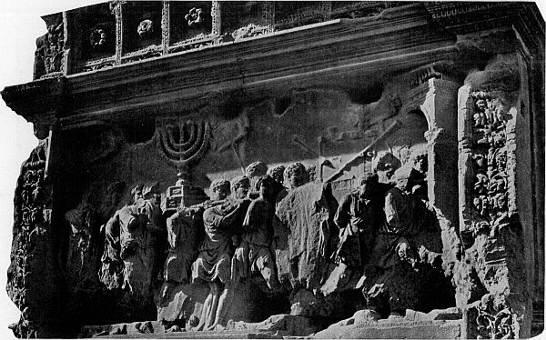
THE SPOILS OF JERUSALEM, FROM THE ARCH OF TITUS
[202]
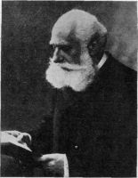
MAX NORDAU (born in Budapest, 1849), world-famous neurologist,
author, and publicist, a Nestor among Jewish leaders, and since
Herzl's death the President of the International Zionist Congresses. His
books on "Degeneration," "Paradoxes," and other volumes of social studies,
have evoked world-wide discussion. In sending the present article to The
Menorah Journal from Madrid, where he is now sojourning on account
of the War, Dr. Nordau writes: "I wish my words may not be dropped
into deaf ears. You can do much to bring them home to the consciousness
and the conscience of leading American Jews."
The Duty of the Hour
By Max Nordau
WE are the people of the Messiah. We feel, we think Messianic.
In all situations of life, and particularly in the
critical ones, we hope for a miraculous event which will
fulfill all our yearnings, and in this hope we feel delivered of the
manly duty to work for the realization of our ideals, to prepare
our salvation by our own efforts.
At this moment a large portion of Israel dreams once more a
particularly lively Messianic dream. Hundreds of thousands,
millions of Jews, indeed, have abandoned themselves to the expectation
that at the conclusion of the peace which will put a
stop to the world's war, the destiny of the Jewish people must
take a miraculous turn. The plenipotentiaries of the belligerent
[203]powers will assemble in a conference or a congress to treat of the
conditions of peace. The conquerors will exact of the vanquished
the price of their sacrifices and return home with their booty in
the shape of territorial acquisitions and indemnities. And in the
course of these transactions the miracle will happen that a share
will be apportioned to the Jewish people too. Palestine will be
offered them, either as an area for colonization or, still better, as
a full property under the protectorate of a great power. They will
be accorded also entire equality of rights in Russia and Roumania.
The Basis of Jewish Hopes: (1) The Self-Interest of the Powers
WE may plead reasons or excuses for indulging in this dream.
Utterances of leading personalities of the big nations which
will necessarily be represented at the peace conference have become
publicly known which permit the conclusion, without intentional
self-beguiling, that some governments at least, if not all of
them, are occupying themselves earnestly with the Jewish problem
and examining the question whether it might not be worth
trying to settle the Jews in search of a homestead in Palestine,
under international and local legal conditions vouchsafing them
full freedom of economic, intellectual, and moral development.
On the other hand, there is no doubt that the situation of the
six millions of Russian Jews occupies a certain place in the
thoughts and cares of the governments. Several countries have
an interest in turning away from their frontiers the ever more
violently swelling stream of Jewish emigration, and doing so
otherwise than with the brutal method of locking up their boundaries
and posting a police watch before them. Others have the
well-being of Russia at heart; they understand that the sufferings
and the despair of her six millions of Jews are a source of dire evils
and that the emancipation of this hard-working and highly gifted
population will bring about the material prosperity, the general
progress, and the powerful strengthening of Russia. Other
countries again, the statesmen of which are more farseeing than
the average and have been able to rise to the conception of a
political world hygiene, are aware that the systematic crushing of
six millions of intellectual and strong-feeling people driven to
despair must create a hotbed of the most dangerous anarchistic[204]
and revolutionary epidemics, the spreading of which cannot easily
be limited to the spot of their origin. Lastly, even the most
irreclaimable pessimist will admit at least the possibility that
governments may not be entirely inaccessible to purely humane
sentiments of pity and justice, and may regard the treatment of
the Jews of Russia and Roumania as an indictment against the
civilization and the ruling religion of white mankind.
(2) The Precedent of 1878
THE hope of the peace conference resulting in great achievements
for the Jewish people, moreover, can evoke an historical
precedent. The Berlin Congress of 1878 which brought
the Russo-Turkish war to an end, created the Bulgarian state,
raised Roumania to the rank of an independent kingdom, and
gave Bosnia and Herzegovina to Austria-Hungary, found time to
occupy itself with a Jewish matter and to introduce into the
treaty condensing its decisions the well known article obliging the
new kingdom of Roumania to bestow on her Jews equality of civil
franchises. It is not the fault of the Berlin Congress that this
article has remained to this day a dead letter. The case, at any
rate, is of a nature to encourage Jewish optimism against those
sceptics who sneer: "A diplomatic conference distributes no
presents; complacency and liberality play no part there; there
are only such interests enforced which are backed by a victorious
army or at least by an army which still inspires some fears."
Well, in 1878, too, the Jewish people had no country, no army,
no government, no accredited ambassador, and yet two of the
most influential members of the Berlin Congress, the representative
of Great Britain, Earl Beaconsfield, and that of France,
Waddington, were ready to step forward as advocates of the
Jewish cause, and the president of the Congress, Prince Bismarck,
evidently favored their action.
But We Ignore a Valuable Lesson
I HAVE produced everything capable of justifying the expectations
with which many Jews look forward to the future peace
congress. But I do not notice that the Jewish people keep in
[205]
view the lessons taught by the historic example of 1878. Beaconsfield
and Waddington did not plead for the Roumanian Jews at
the Berlin Congress from impulses of their own or in consequence
of a sudden inspiration from on high. The Paris Alliance Israelite
Universelle, the London Anglo-Jewish Association, the Berlin
Verband der deutschen Juden, had done serious and efficient
preparatory work, memorialized their several governments, informed
them of the facts, solicited their intervention. It was due
to their efforts that the position of the Roumanian Jews came up
for consideration at the Berlin Congress. They showed the way
the Jewish people must follow if they wish to obtain anything of
governments in congress. What are the Jewish people waiting
for in order to act now as their fathers acted thirty-seven years
ago?
The war is raging, in a hundred battlefields uncounted brave
men shed their blood for the future of their nation, Jewish soldiers
fight and fall side by side with their non-Jewish countrymen and
comrades, but their heroic sacrifices are utterly useless for their
own people. In every country, even in Russia, the military excellence,
the patriotism, the contempt of danger and death of the
Jewish soldiers, will be rewarded more or less lavishly and liberally
with distinctions and preferment, but experience teaches us
that their glorious conduct is forgotten very soon after the war by
everybody but themselves and their brethren, and that it certainly
does not change in the least the status of the Jewish people
among the nations. At any rate the consideration of the merits
and military virtues of the Jewish soldiers will not by itself stimulate
to action the diplomatists at the peace congress, unless they
are insistently recalled to their memory. All this requires preparation
and arrangements, of which as yet there is scarcely any
trace to be seen.
Who Could Accept Palestine for the Jews?
THERE is another point to which attention must be drawn.
Let us admit the most favorable case: the congress will
really open up Palestine to the Jewish people for colonization with
self-government and autonomous local institutions. To whom
[206]
will it be in a position to make such a concession? To whom will
it deliver Palestine? The Jewish people is a concept, but it is not
a political and administrative individuality, it is not a body with
a head and vital organs. There is actually not one man who could
present himself to the governments assembled in congress, receive
Palestine from their hands, and offer them the guarantee that he
will lead into the land of their ancestors those Jews that yearn
for a new home and national life on an historic soil, and that he
will undertake the implanting of modern culture, the maintaining
of order, and the economic development of the country. An offer
of the congress would fall flat, nobody having the moral right and
the material capacity to accept it in the name and in behalf of
the Jewish people.
Let Dreaming Give Way to Organizing! The Task for American Jewry
ALL this points to the necessity of an adequate preparation for
coming events. The Messianic dream does not suffice. Mere
wishes and hopes are vain. We must work. We must organize
ourselves without further loss of time. We must create a body
with men of authority at its head, and the living forces of the
Jewish people, or at least a considerable portion of them, at its
back. The forces and the men do exist. They have only to be
gathered, united and grouped.
Who is to do this organizing work? My reply is unhesitating:
American Jewry. I should be happy to say: here is a task for
the Zionists' organization which exists, which lives, which is prepared
for work of this kind, and which has to consider its carrying
out as its natural function; but I shrink back from giving this
near-lying answer. Many pre-eminent and influential Jews whose
good Jewish sentiments no one has a right to doubt, persist in
considering Zionism as a party tendency against which they raise
objections. Now the representations of the Jewish people before
the governments must not be a party affair, but ought to be the
cause of the entire people and must embrace all its parts. The
invitation must therefore be issued by personalities who repel
nobody at the outset by their pronounced party color. Moreover,
these personalities must necessarily belong to a neutral country,[207]
so as to leave no room for the argument that according to the
political definition of the hour they are enemies and to co-operate
with them would mean disloyalty to one's own country. Only in
the case, which I hope will not be realized, of the United States
also precipitating itself into the whirlpool of the war, would they
be bound to transfer their initiative to the Swiss or the Dutch
Jewry. The first labor of the initiators should consist in inviting
the existing Jewish organizations of all countries to have themselves
represented by a delegation on a permanent board or committee.
It would be a matter of regret if they refused, but this
ought by no means to be a reason for discouragement nor for discontinuing
further endeavors. In this case the initiators would
simply have to do fundamental work and try to fall back on elements
that at present stand outside, or intentionally keep aloof
from, existing organizations. It would be the business of the permanent
board to secure financial co-operation that could be called
upon under given circumstances, and to cause Jews of standing in
every great country to approach their government, to submit to
it in time the aspirations of the Jewish people, and to procure its
approval and sympathy for them.
"Not an Instant to Lose if We Wish to Prepare"
OUT of the peace which must follow the present horrible war,
a new Europe, a new world will be born. It depends on us
whether in this new world there is to be a place, "a place in the
sun," for the Jewish people. We have not an instant to lose if
we wish to prepare for the grand opportunity. Should we miss
this occasion we should have to resign all our national hopes, I
am afraid, for a very long time, if not for ever. We may, of course,
continue to dream our Messianic dream, but this will then ever
remain a dream till the dreamer disappears and his dream with
him.
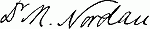
[208]
What Judaism Is Not
By Mordecai M. Kaplan
"Every man who has seen the world knows that
nothing is so useless as a general maxim."
Macaulay, in Essay on "Machiavelli."
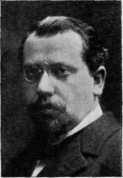
MORDECAI M. KAPLAN (born in Russia in
1881, came to America in
1889), studied at College of
the City of New York (A. B.
1900), Columbia (M. A. 1902)
and Jewish Theological Seminary
(Rabbi, 1902); held Rabbinical
position in New York,
1903-1909; Principal since
1909 of the Teachers' Institute,
and Professor of Homiletics
since 1910 in the Jewish Theological
Seminary. Fearless and
original in thought, and exceptionally
stimulating as a Menorah
lecturer, Professor Kaplan
has won the deep respect and
friendship of Menorah students
at the various universities where
he has lectured on Jewish Religion
and Education.
MOST of the pain, which according to Koheleth
comes with the increase of knowledge,
is in the unlearning of the old rather than
in the learning of the new. Once an idea has become
imbedded in the mind, it cannot be removed without
causing a mental upheaval. Blessed are the young
to whom unlearning is easy, or who have not much
to unlearn. Whether our Jewish young men know
much or little about Judaism, they are certain, as
a rule, to have formed notions about it of which
they must be disabused, if Judaism is to constitute
an important factor in their lives. Strange to say,
they have obtained these notions not from sources
hostile to Judaism, but on the contrary from sources
distinctly intended to inculcate both a love and an
understanding of the Jewish religion,—such as catechisms
and text-books used in our religious schools,
and articles in encyclopedias meant for the enlightenment
of the general public. The view of Judaism
that one gets in this manner is not only a distorted
one, but it has the effect of bringing all further
reflection to a standstill. It lands one in a
blind alley. The conclusion which a person generally
arrives at when he consults these sources for
information about the Jewish religion is that, whatever
else Judaism might be, it certainly offers no
field for the exercise of deep insight or broad vision.
This largely accounts for the manifest sterility and
uncreativeness of present-day Judaism. To give new
impetus to fruitful and creative thinking in Jewish life, it is necessary, in
the first place, to counteract the paralyzing spell of these routine and conventional
interpretations of Judaism.
To be concrete, let us take a typical instance of the kind of instruction
that has been in vogue for more than a century. Here are a few
sentences from the article on Judaism in Hastings' Encyclopedia of Religion
and Ethics: "Judaism may be defined as the strictest form of[209]
monotheistic belief; but it is something more than a bare mental belief.
It is the effect which such a belief, with all its logical consequences, exerts
on life, that is to say, on thought and conduct. . . . . A formal and
precise definition of Judaism is a matter of some difficulty, because it
raises the question, What is the absolute and irreducible minimum of conformity? . . . .
Judaism denounces idolatry and polytheism. It believes
in a universal God, but it is not exclusive. It believes that this
world is good, and that man is capable of perfection. He possesses free
will, and is responsible for his actions. Judaism rejects any mediator and
any cosmic force for evil. Man is free. He is not subject to Satan; nor
are his material gifts of life inherently bad. Wealth might be a blessing
as well as a curse," etc., etc.
In an encyclopedia we do not expect to find original or striking views.
It is not the particular article from which this excerpt is taken that fault
is found with. That article is selected simply as representative of the
kind of information that is expected to help one grasp the meaning of
Judaism. It is typical of the baffling glibness with which Jewish teachers
and preachers usually talk about the Jewish religion. One who reads or
listens to such statements finds that somehow or other little has been added
to his stock of knowledge about Judaism. He experiences how irritating
words can be when they either hide thought or betray its absence.
Mistaking the Shadow for the Thing Itself
IN the instance quoted, it is both amusing and painful to follow the
author's vacillating description of Judaism. At first Judaism is a form
of belief. Then it becomes the effect of that belief upon thought and
conduct. From that it evolves into some irreducible minimum of conformity,
if we can only get hold of it. This being difficult, it gets to be a
series of colorless platitudes. Such a definition calls up the image of a
streamlet, now leaping over rocks and boulders, now meandering upon
level ground, and finally losing itself in the marshes. The fitfulness and
inconsistency of the formulation, the picking up of the different threads
of thought without following out any one of them to its conclusion, are
characteristic of this type of definitions. They are as devoid of vitality as
a long drawn-out yawn, and their want of logic is exasperating. The
merest tyro can see that one can profess the principles they embody
without being a Jew. There are many sects that would heartily subscribe
to all of them. Universalists, Deists, Theists, Unitarians, and
even Ethical Culturists hold these doctrines. As matters stand at present,
these sects engage more actively in spreading them than we do.
What is fundamentally wrong with the above definition and with
the entire class of formulations of which it is an instance? The[210]
tendency to mistake the shadow of a thing for the thing itself. The main
cause for misapprehending the true character of Judaism is the proneness
to regard it merely as a form of truth, or, at best, as the effect of a truth
upon thought and conduct, and to overlook entirely the fact that it is a
living reality, a very strand of the primal moving forces of the world.
"Judaism is the truest form of truth," says one writer. "Judaism gives,
to truth the most truthful shape," says another. Now and then they
speak of it as a "form" of life, but it turns out to be only a lip service,
or a homiletical phrase. They fail to follow up the clue which is more
than once suggested to them by the difficulty of expounding Judaism as
a form of truth. That being a Jew has always involved conforming to
certain principles and modes of life is a truism. But these principles
or observances by themselves constitute only the outward expression of
Judaism. The mathematical formula which states the law of gravitation
is not the same as the force of gravitation itself. It is conceivable that
further experimentation might make it necessary to qualify the mathematical
formula. But the force of gravitation will ever be the same
as it has been. The change from looking upon Judaism as a form of
truth to that of regarding it as of the very substance of reality calls for
a complete transformation in our mode of thinking, or what has been
termed "a psychological change of front." We must break completely
with the habit of identifying the whole of the Jewish religion with merely
certain beliefs and duties, while ignoring completely the living energy
which has operated to produce them. They are only the static residue
of something that is essentially dynamic.
The Jewish Aversion to Creeds and Formulas
THE change in attitude which is here advocated is not a departure
from all that has gone before in Jewish life. If it were that,
Judaism could not possibly survive under it. The fact is that we are only
bringing to the fore and translating into modern phraseology an attitude
that in one form or another has always asserted itself in Judaism. Simultaneously
with the tendency to compress Judaism within certain formulas,
there has always shown itself a strong aversion to gathering Judaism
within creeds and minima of conformity. To-day that aversion, which
has hitherto remained a matter of feeling and intuition, can make itself
articulate by availing itself of the results of recent research in the fields
of religion. It need no longer entertain the fear of being charged with
spiritual anarchy. Discountenancing dogmas in Judaism is not synonymous
with intellectual libertinism. It is rather a protest against shallowness
and superficiality, much like the chagrin of the artist at having his
knowledge of drawing praised and the soul of the picture missed.
[211]
We can give in this connection a few cursory examples of the anti-summarizing
tendency. The Torah itself, in one instance, seems to set
out with a view of reducing Judaism to a minimum, but scarcely finds
itself able to do so. "And now, Israel, what doth the Lord thy God
require of thee, but to fear the Lord thy God, and to walk in all His ways,
and to love Him, and to serve the Lord thy God with all thy heart and
with all thy soul, to keep the commandments of thy Lord and the statutes,
which I command thee this day, for thine own good?" "Is this a small
matter?" asks the Talmud, in evident surprise at the hugeness of the
program. When the would-be proselyte came to Shammai and requested
him to sum up the entire Torah in one principle, he received no
better treatment than he deserved, when he was made to take to his heels.
That Hillel did not rebuff him and gave him the principle, "What is hateful
to thee do not do unto thy neighbor," proves that Hillel knew how
to be patient and tactful, but not that the Talmud looks upon that summary,
or any other, as expressive of the essence of Judaism. The same
applies to religious practices, concerning which the Mishnah announces
the maxim that it is not for us to estimate which are more important than
others. We are told that the custom obtained at one time of having the
Ten Commandments read as part of the daily service; but that as soon
as it gave rise to the impression that the Ten Commandments were more
essential than the rest of the Torah, it was discontinued. It is true that
Philo reduces the teachings of Judaism to five essential doctrines, but that
was because Judaism to Philo was Platonism divinely revealed.
As Shown by Judah Ha-Levi
THE movement to formulate the fundamental teachings of Judaism
first gained headway at the beginning of the eleventh century with
the Karaites, whose entire conception of Judaism was such as to render
their sect hopelessly stagnant and doomed to dwindle. Still, even they would
never have thought of emphasizing certain dogmas as indispensable, had
they not discerned in the teachings of Mohammedanism a dangerous challenge
to Judaism. Thus the dogma-making tendency in Judaism arose during
the Middle Ages not as an indigenous product but as a retort to the
dominant religions of the time. What might be called the application of the
synoptic method to the Jewish religion remained confined mostly to the
part of Jewry which came, directly or indirectly, under the influence of
Aristotelian intellectualism.
To this trend Judah Ha-Levi (1085-1140) stands out as a notable
exception. In him the disapproval of having Judaism subsumed under
formulas of a philosophic stamp comes again to the surface. His being
a poet even more than a philosopher enabled him to get a better insight[212]
into the inwardness of Judaism than that obtained by the intellectualists
with their analytic scalpels. This is apparent in his well-known "Al-Khazari."
The story goes that the Khazar king, after consulting a philosopher,
a Mohammedan, and a Christian as to what he should believe and
do, finally turned to a Jewish rabbi. When the king asked him about the
Jewish religion, the rabbi replied, "I believe in the God of Abraham, Isaac
and Jacob, who led the Children of Israel out of Egypt, who fed them in
the desert, and gave them the land. . . . . Our belief is comprised in
the Torah, a very large domain." Upon hearing this, the king grew indignant,
and said to the rabbi, "Shouldst thou, O Jew, not have said that
thou believest in the Creator of the world, its Governor and Guide, and in
Him who created and keeps thee, and such attributes which serve as evidence
for every believer?" But the rabbi persists in his mode of stating
Judaism. He parries successfully the king's efforts to draw out of him
some definition of Judaism in terms of speculative theology. The king in
time becomes a convert to Judaism, and it is only then, according to Judah
Ha-Levi, that he succeeds in getting the rabbi to teach him concerning the
attributes of God, as if to imply that one has first to be a Jew before indulging
in any abstract or philosophic study of Judaism. The keynote
of Ha-Levi's thought is that the essence of Judaism is not merely to give
assent to any general belief, but to belong to Israel and share in its experiences.
By Maimonides and by Abravanel
EVEN Maimonides (1135-1204), who is usually represented as the
chief sponsor of the systematizing and speculative tendency in
Judaism, is far from having attached as much significance to the Creed he
formulated as the fact of its presence in the prayer book might indicate.
He himself strongly deprecates attaching more importance to one part
of the Torah than to another. "The Ten Commandments and the Shema
in the Torah," he says in the very same chapter of his commentary on the
Mishnah which contains the Creed, "are no holier than any of the genealogies
that are found in it." Albo (1380-1444) reduces the essence of
Judaism to three, yet inconsistently declares that he who denies other
articles of faith which are of minor importance is no less a heretic than
he who denies any of the essential ones. In fact, he admits that there are
as many articles of faith as commandments in the Torah.
Abravanel (1437-1508), though an admirer of scholasticism, and
practically the last of the line of Jewish Aristotelians, considers the
thirteen Articles of Maimonides' Creed gratuitous, and as not representative
of the maturer views of Maimonides. His opinion is that they
properly belonged to the commentary on the Mishnah, which was the work
of his youth; and that as he ripened intellectually, he changed his mind[213]
about their value. We miss them in the Code and in the "Guide to the
Perplexed," where we should most of all have expected to find them. In
the same connection, Abravanel adds that the fashion of laying down
creeds as fundamental in Judaism owes its origin to the method employed
in the secular studies which always started with certain indisputable
axioms.
The same resistance to the effort to extract Judaism from a few
source principles is encountered in Jewish mysticism. Whatever we may
think of the particular form which mysticism took on in the Jewish religion,
we cannot but regard it as the outbreak of a longing that forms a
part of all vital religion. We have good reason, therefore, to treat with
respect its opinion of the intellectualizing process of Jewish philosophy.
Although it was also addicted to speculative categories and developed a
theosophy instead of a theology, it approached Judaism from an entirely
different angle. Being impressionistic in its trend, it was bound to look
elsewhere than to abstract concepts for the core of Judaism. To put
Judaism into the form of a creed appeared to the mystics like combining
pure gold with a baser metal, in order to mint it for circulation.
And More Recently by Mendelssohn
IN modern times the anti-dogmatizing tendency found a vigorous exponent
in Mendelssohn. Yet, somehow or other, he has been singled
out for attack, as though he had advocated a dry formalism, unredeemed
by any inner principle or inspiration. He is charged with having been
under the influence of the shallow deism of the English philosophers. The
truth is that Mendelssohn only repeats in his way what Judah Ha-Levi had
taught before him. He distinctly emphasizes the belief in the existence of
God, in providence and in retribution as the sine qua non of Judaism, but
he is clear-minded enough to realize that they constitute what he calls "the
universal religion of mankind," and not Judaism.
Mendelssohn did not succeed in developing a constructive view of
Judaism, whereby it might be enabled to withstand the shock of modernism;
nevertheless, he does not deserve the treatment accorded him because
of his alleged attitude towards creeds. His position as to the relation of
creeds to Judaism is the only tenable one. He maintains that creeds can
only be of two kinds; either they oppose reason, and should therefore
find no place in Judaism, or are so self-evident that they are not confined
to Judaism. This does not mean that to be a Jew one can believe whatever
he likes, or not believe at all. It does not mean that Judaism only demands
outward conformity. Mendelssohn was aware that certain "Hobot ha-Lebabot,"
Duties of the Heart, are indispensable to Judaism. But he refused
to make of Judaism a mutilated philosophy.[214]
Judaism Needs Working Principles—Not Abstract Dogmas
NO sphere of life can be maintained intelligently without some basic
principles, particularly so exalted a sphere as religion. Who
counts upon any art attaining a high degree of development by mere rule
of thumb? Is anything so characteristic of modern life as emphasis upon
the mutual interrelation of theory and practice? All our strivings to
rehabilitate Judaism are bound to prove futile unless they are made to
center about some definite conception of its aims and methods. We need
principles, yea dogmas, in Judaism as we need working hypotheses in any
great undertaking. But dogmas, in the sense of abstract principles, regarded
as immutable, are both superfluous and dangerous. If such dogmas
are nothing more than the common denominator of all that has been identified
with Judaism in the course of its history, they are sure to be banal
and colorless. If they are to be fixed and unalterable, they are bound in
time to clash with reason and experience, and to sap the religion of its
vitality. Judaism needs principles that can help it to withstand danger,
that can give it a lease upon life. This is the criterion to be applied to
any articulate conception of Judaism. Can the principles which the text-books
on Judaism declare to be fundamental render this service? The
reply is an unequivocal No. Hence they are worse than useless.
But we cannot afford to stop at this point. Knowing what Judaism
is not, is only half-knowledge, and therefore quite dangerous. We must
apply ourselves anew to the task of pondering over the problem of Judaism.
We may indulge to our heart's content in lauding the past when one
could be a Jew without troubling his head about the question, "What is
Judaism?" We may sigh in regret for those days when a Jew upon being
asked about his religion was able to reply, "I have no religion; I am a
Jew." The danger of the entire economy of the Jewish soul going to pieces
is too imminent to permit us to lull ourselves into that blissful unconsciousness,
the praises of which Carlyle sang quite consciously. We are treading
the narrow ledge of a precipice. Men like Zollschan, Ruppin, and Theilhaber
have pointed out the awful chasm that threatens to engulf us. It
requires not a little courage to maintain our nerve and avoid being seized
with the vertigo. But courage alone is not enough. We must take into
account the narrowness of the path and tread over it warily.
We Must Face the Real Problem of Judaism
WE Jews must do some very hard thinking, of a kind, perhaps, that we
have not been called upon to do before. That task dare not be
shirked. We must not give in to that tendency which breaks out whenever
we have something very difficult to do, of turning to anything except that
[215]
which we know demands peremptory attention. A task that is thus
neglected revenges itself by haunting us and upsetting whatever we undertake.
Instead of giving to the problem of Judaism the careful deliberation
that it requires, we get busy with a thousand and one things, whereby
we hope to escape the need of concentrated attention. We have become
fussy and fidgety. We are divided into committees and sub-committees.
In place of clearness of thought we have a confusion of tongues. Our case
illustrates the truth which Pascal enunciated, that most of the evils in the
world can be traced to the inability of a person to sit in his room and
think.
Without deprecating any of the undertakings to bring order out of
the social chaos in Jewish life, we must place at the present time chief
emphasis upon the serious consideration of our inner problem, the problem
of the Jewish soul and of the Jewish spirit, the problem of Judaism. We
may well envy the thousands of soldiers on the battlefields of Europe to
whom it is a joy to meet death for the sake of their respective flags. Each
of them has a cause to die for. Most of us, by reason of our Jewish descent,
find life, particularly in the higher sense of the word, to be a keener
struggle for existence than our neighbors do. Yet it would not be half so
wearing if our difficulties were consecrated by an inspiring cause or by a
thrilling loyalty. Why need we be poverty-stricken in spirit, bereft of
everything that makes struggle sweet and suffering endurable? We must
put the very question, What is Judaism? in a new way and in a different
spirit. We must have the definite purpose in mind, of so understanding it
as to know what to do next, and to strive for that vigorously, so as not
to drift like helpless flotsam and jetsam. We need strong beliefs which,
as Bagehot puts it, win strong men, and then make them stronger.
Judaism Must Speak to Us in the Language of Today
IN the Talmud we find the principle enunciated that the Torah adopted
the style of language that men were wont to use. A condition indispensable
to a religion being an active force in human life is that it speak
to men in terms of their own experience. Judaism, to be significant to modern
man or woman, can no longer afford to speak in the language of theology.
Psychology and social science, history and human experience, have
revealed new worlds in the domain of the spirit. The language of theology
might have a certain quaintness and charm to the ears of those to whom
religion is a kind of dreamy romanticism. But to those who want to find
in Judaism a way of life and a higher ambition, it must address itself in
the language of concrete and verifiable experience.
The ideas in which Judaism was wont to spell itself out in the past
are no longer at home in the Weltanschauung of the modern man. What[216]
prevented the Reform movement from becoming a real reformation and a
vitalization of Judaism was that it sought to adjust Judaism to a Weltanschauung
which had already begun to grow obsolete. We have to reckon
with all that has been learned in the meantime concerning human society
and the place of religion in it. When one comes to a strange land, and has
with him only the coin of his native country, he must calculate in terms of
the currency of the land he is in, if he wants to know whether or not he
has enough to live on. Can we Jews afford to live spiritually upon our
heritage? That can only be answered if we learn what that heritage is
equivalent to in the current mental coin of the modern man. If we do not
wish to be cut off from the stream of living thought, if we do not want to
be spiritually starved, we Jews must know not so much what Judaism meant
twenty centuries ago, nor even a century ago, but what it is to mean to
us of today.
Editors' Note.—In articles to follow, Professor
Kaplan will give his conception of "What Judaism
Is."
[217]
The Jewish Student in Our Universities
A Menorah Prize Essay
By Morris J. Escoll
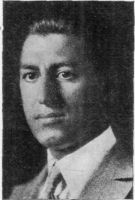
MORRIS J. ESCOLL (born
in Russia, 1893, came to
America in 1896), graduate of
Stuyvesant High School, New
York (1910), student at Columbia
(1910-'12) where he won
the Peithologian Medal for a
Freshman Essay; worked as
farm hand; and since 1914 a
student in the Cornell College of
Agriculture. The present paper
is a somewhat revised version
of the Essay with which he won
the Cornell Menorah Prize last
June.
THE remarkable adaptability of the Jew to
his environment has been at once his
strength and his weakness. His strength,
in that it provided a variable cloak to shelter him in
storm on the one hand,—on the other, to deck him
seasonably, as it were, for the onward journey,
when days were fair; his weakness, in that it has
often led him to forget that the cloak was but raiment;—"and
is not the body more than raiment?"
Of strength in storm we have had example enough
for twenty centuries—such example as is unique in
history; of what is more rare, strength in days of
fair weather, we are to expect a supreme example
today, and in America, in the American Universities
let us say, where the cloak of adaptability is most
free and seasonable—a supreme example of strength,
or of weakness.
The Cloak of Adaptability
ONE is at first reluctant to single out the Jew
from his fellows at college. He seems in no
manner different from them. He studies with them,
eats with them, plays ball with them. He writes editorials
for the college paper; he competes in the
oratorical contests. One, for example, is a member
of the school orchestra; another, perhaps the son or the grandson of an
immigrant from Germany, leads the cheers at the track meet; another, himself
an immigrant from Russia, plays on the chess team and is one of the
brilliant scholars in his class. This last does, at present, have something of
the stranger about him, but before long, no doubt, his speech will have become
more smooth, his trousers will have begun to show a crease; he will
have become quite an interesting and regular figure at the various reform
and ethical club meetings at the university, and he will begin to be seen quite
[218]
frequently in the company of his gentile classmates—even in the company
of his German-Jewish cousin. Wonderful, indeed, the country that can so
readily attire its adopted children, and, as the saying goes, make them feel
at home; wonderful, perhaps, the race that, through centuries of degradation,
has kept alive, though often latent indeed, the potentialities of equal
partnership with the most enlightened peoples of a twentieth century civilization.
What though it has no long past, America is the great land of
the future. Here let the Jew lay aside his burden of the time that has
gone and build anew into the time to come. Shall we regret, then, that the
Jewish student has taken on the polite address, the proud carriage, the
heartiness and the chuckle of his Yankee comrade? Should he now keep
the gabardine of his forefathers, yes, and the credulities and ceremonies of
a circumscribed and persecuted people? Why not absorb that wholesome
ruddiness, denied him so long, that breathes of open American prairies, fair
play, and the Declaration of Independence?
"The Goal of Twenty Centuries of Wandering"
"FOXES have holes, and the birds of the air have nests, but the son of
man hath not where to lay his head." Of whom did the great prophet
speak more fittingly than of the children of his own race? Homeless for
two thousand years, persecuted, ostracized, their backs have become bent
and in the eyes of many they have become a nation of religious fanatics
and usurers, wily, unkempt. The Jewish youth of to-day cannot look back
upon his history of exile and say, as did Æneas of old after seven long
years of wandering: "It will be pleasant to remember"—"forsan et
haec olim meminisse juvabit"; his trials have been but too real and he has
not recovered sufficiently to have any desire to recall them. Blame him not
then, if, when others from obscure and semi-civilized quarters of the globe
hail with pride their ancestry, he alone, with the proudest traditions in
history, will sometimes seek to hide his descent. He still feels, moreover,
some of the old "wiliness" and "unkemptness" within himself; he thinks
they are of the Jews and of none others—and he wants to get rid of them.
He still feels some of the old usury in his bones, the clannishness, the distrust
of the world, which the squalid ghetto walls the Middle Ages had built
around his fathers have bequeathed to him, and he wants to get rid of
those. Shall we look askance at him then, if when the American University
welcomes him to her hearth—Ithaca, for example, with her kindly professors
and laughing girl students, her ball games, her neat cottages and
rolling hills that drink Cayuga's stream beside—in the excess of eagerness
he should sometimes break with, yes, even forget his past, and dream new
things? (Hills, cottages, home and country; superfluous concepts were
[219]
these to other men, elementary satisfactions which they are born into and
take for granted as their inevitable heritage.) Eagerly, therefore, greedily,
perhaps, he sees new things; the goal of twenty centuries of wandering
stands revealed before him. The Irish have found a home in America, the
Germans, the Italians, the Poles, and why not the neediest of all, the Jews?
The American University typifies the ideals of the great democracy where
"race, creed and previous conditions" are forgotten. Here all men forget
their prejudices. All men become brothers.
But Not Yet Are All Men Brothers
BUT hold, have we not been expressing a wish rather than a fact? We
look into our own hearts, and strife and jealousy and racial antagonism
are still there. Can we expect that man who has but lately begun
to think of brotherhood can already feel it in his blood; that the age-long
superstition against the Jew can be obliterated with a new geographical
boundary—though that boundary be indeed serene as the all-washing, all-embracing
Atlantic? Oh, that "reality does not correspond to our conceptions,"
exclaims Wilhelm Meister.
For centuries the Jews had a respected and comfortable home in
Spain, but then came the fearful Inquisition, and the ninth day of Ab 1492
saw 300,000 of them exiled out of the country they had helped grow to
culture and wealth. There was the Declaration of the Rights of Man during
the French Revolution, but then came the Dreyfus affair a century
later. There was science and enlightenment in United Germany, but never
was anti-Semitism more pronounced, more scientific than there between
1875 and '80. In 1881 the May Laws were passed in Russia. In 1882
there was a ritual murder trial in Hungary. Our statutes and sciences,
after all, are but ways and means, improved ways and means, to what?—often
to unimproved ends, it seems. Our learning and knowledge are what?—but
channels to educate, to lead out (e-duco) the noble qualities in man?
yes; perhaps also his jealousies and hatreds. And thus there comes a time
of doubt. The courtesies and learning of this university life, reflects the
Jewish student, perhaps but cover up these jealousies and hatreds, make
them more polite, and all the more painful therefore. However much he
will not, he sees cliques and denominational clubs all about him: Catholic
clubs, Lutheran clubs, Jewish clubs; in the lecture room the gentiles form
their groups and the Jews form theirs; in the election of class officers the
Jews have been slighted; at the class dinner a Jew was insulted; one fellow
was refused accommodations at a student rooming-house because he was a
Jew; and the sensitive young man begins to feel as though there were but
two divisions of people at the University after all: Jews and everybody
else.[220]
The Perennial Burden of the Jew
BUT it is unfair and ungrateful to speak thus of the American University.
All superstition and prejudice may not have disappeared
here; enough it is that they tend to disappear so rapidly. But what of
the large country outside the university? What of the growing Jewries
in our cities? What of the Jew in the little hamlet carrying his pack of
tinware from door to door; he is so eager to earn an honest dollar for a
wife, a daughter, perhaps for a son at college; so eager to find him a home
like that of the earlier non-Jewish immigrants who buy his wares; yet why
must he overstrain his virtues before them, break through the ice, as the
saying goes, and clear himself—why? for being a Jew. Evidently, others
are taken as good until they prove themselves bad; the Jew is bad until he
proves himself good. Should some other Jewish trader come to the same
locality and commit some wrong, overcharge a shilling on the price of a
kettle, for example, the first Jew must be made to feel ashamed of it, for
it was not the other man who did the wrong, but the "Jew in him." Evidently,
again, the Jewish problem is not of the individual, but of the race.
Must the Wandering Jew bear a perennial burden?
But even if this problem were solved (it is possible for all the Jews in
America to be in time regarded on equal terms with their neighbors or even
to be assimilated altogether with them), what of the Jews in Russia, in
Roumania, in Galicia? How long must we wait for them to assimilate or
to become free and equal sons of a fatherland? Surely we shall not suggest
that it is well for them to continue forever an alien people in those
lands. And even if this problem too were solved, if the Jews of Russia,
Roumania, and Galicia were to become free and equal sons of a fatherland,
if the Jews all over the world were to be taken in as brothers by their neighbors,
is it enough? Are we to be satisfied with this alone? "Hills, cottages,
home and country"—is not all this but raiment? What of the body,
what of the Jewish soul?
The Three Types of Jewish Students: (1) The "No-Jew"
WITH his problems thus put, how shall the Jewish youth face them?
Shall he consider body and raiment equally, shall he put body
above raiment, or shall he put raiment above body and forget the body?
To put it crudely into other words, shall his ready adaptation to American
University life tend to make him less of a Jew, more of a Jew, or no Jew at
all, and thus tending, to repeat our original thought, wherein will it be for
weakness, wherein for strength? Each Jewish student, no doubt, in varying
measure, responds to all three of these tendencies; yet, insofar as the
response towards one or another of these is more marked in certain individuals
[221]
than in others, let us group the individuals together accordingly,
and for the convenience of our discussion divide them into three separate
types.
The no-Jew type is common on the campus. His presence pleases us,
perhaps even flatters us. He is carefree, boyish. He makes heroes of
the gridiron athletes; he delights in the comedy shows that come to town;
he joins his non-Jewish friends in outdoor play in that easy laughter of
theirs that bubbles over at a trifle;—and we were beginning to think the
Jew had forgotten to play and laugh. We saw him after sundown once,
single in a canoe, paddling across the wide unruffled lake and far where
purple sky and purple water seem to commingle, and we thought we saw
the primitive Indian again, the wholesome child of nature plying those
waters as of old. Sail on, brave youth, we are glad to see thee still a lover
of the wild, the simple, the calm; we are glad there is still in the Jew something
of the wholesome child, the adventurer, the savage, shall we call it?
We are almost tempted to say we are glad to have him forget his past,
to sail thus away, as it were, from his troubled brethren, away across the
unruffled lake where purple wave and purple cloud in peace commingle,—so
long have we waited for the mind of the Jewish youth to be youthful, for
the moist gleam in the eye of a sorrowful children to disappear.
"Neither Fish, Nor Flesh, Nor Fowl"
BUT not always is this drifting out of Jewish life so comely. There is
another individual in this type in whom it appears very much strained.
The first merges within the American tradition, the second obtrudes into
it; the first unconsciously, the second painfully aware of his effort; the
first because he has so much of the tradition within him, the second, we are
afraid, because he has so little. The second individual is generally of more
recent arrival to this country than the first; he considers his Jewishness
a misfortune which must be gotten rid of. Both are, indeed, self-centred,
unmindful of their people, but the first is more boyish—and a boy should
be self-centred. Both put the raiment above the body, and in this there
is weakness; but in the first there is not much of body, the roots of Jewish
growth have found no depth or proper sap in him, and if in him there is
not strength of body, there is at least grace of raiment; in the second there
is neither grace nor strength,—he may acquire the superstructure of American
character, but where the foundation to build it on? Where is there
strength when it is ever a getting and never a giving?
Judaism weighs most heavily upon this latter individual. He will
often deny his race, we regret to say, and play for the affection of members
of other races. But they somehow will discover his "misfortune"
and despise him all the more for hiding it. All this prejudice, he explains,[222]
is due to "those other Jews." If they would only learn modesty from the
gentile,—not talk so, not walk so, and not keep hanging around the professor's
desk after the lecture with all sorts of fool questions,—why then,
there would be no more of "this prejudice thing" and he could devote
his time to more important problems. (We half suspect those problems
would be superficial ones. We would also perhaps give more heed to his
urging us to modesty, if only the urging were more modest.) He may even
become eloquent and tell us that the Jews do not appreciate the generosities
and liberties of American life, that they ought to forget their old religious
superstitions and realize that in free America we don't need any religions,
for all men are brothers. (Here again we would perhaps give more heed
to his sentiment for its boundless idealism, were we not afraid it was but a
cover for boundless egotism.)
And which brotherly organization, which fraternity do you belong to
up here? We ask, not to criticize those boyish aristocracies but rather to
embarrass him, we confess, for we know he must name a Jewish fraternity
or none at all. The other fraternities are indeed fraternal—but not to
Jews, not even to those who would get away from Judaism. We speak without
malice of this individual; we regret only that he gets so little out of the
great American tradition. The raiment becomes him badly. Speaking in
slang and following the baseball scores does not make an American. If he
sells his birthright let it be for something more than a mess of pottage.
Even if he should succeed in assimilating himself with the other races,
whether it be by the accumulation of wealth or baptism or successful denial
of his origin, yet we doubt whether he can become really happy—for he is
neither fish nor flesh nor fowl. Again, what can he receive when he has
nothing to give? And thus we must leave him, perhaps even now laughing
in the company of his non-Jewish acquaintances at some caricature of the
Jew presented for their entertainment—that is of one of "those other
Jews"—a type for which we are sorry, a coin that is spurious and does not
ring true.
The Second Type: "An American of Jewish Ancestry"
OUR second type considers body and raiment as of equal weight; he
will make them as one. He will become less of a Jew and more of
an American, a better American for being a Jew. Unlike the first type, he
sees a little beyond himself. Americanism is good enough for him, but
there are other Jews not in America, he realizes, and there are Jews within
America who have not reached, perhaps never can reach, his position of comfortable
participation in American life, and what of them? There may be
more pressing, more important problems in the world, but who else will
solve that particular one of the Jew if he doesn't? He therefore will not
[223]
run away from Judaism; he will try to modify it, of course, to fit in with
American progress, but, for the sake of his people, he will stay a Jew, or
better an American of Jewish ancestry. This type is the son of the big-hearted
givers among Israel. His father subscribes generously to charitable
organizations, is a member of a Reform Temple, and owes much indeed
to the opportunities of the American republic. The son, therefore,
is an American patriot, and what though it seem at times overtaxed, his
patriotism, unlike that of the individual under our first type, is genuine,
for it is not primarily self-seeking. When he speaks of ideals, it is not to
say we have no need of religions at all, but rather that we all in America
have more or less the same belief only that we choose to express it differently,
each according to his ancestral traditions. The three rings, says
Nathan der Weise, may all be true or all be false according to the conduct
of those that wear them. "But are there no peculiar values of conduct,"
we ask him, "bequeathed by the peculiar traditions of the Jew?" "Yes,"
he answers, "but those values may now be found in the cosmopolitan civilization
of America." "We are getting away from peculiar things," he
further adds; "we must learn to break down barriers and distinctions and
work all together, not as Jews or Americans or anything else, but simply
as men. Our only problem is to get the Jews treated everywhere as men."
"But aside from that," we go on to ask, "isn't there a something that
binds together certain groups of people that have had a common history,
a common religion or any such thing in common?" "Yes," he replies,
"but that something is the common intellect. The accident of birth does
not make us friends; though I must help the Jew in far-off Russia, yet I
am more closely identified with my Anglo-Saxon classmate. For me to co-operate
with the Jew simply because he is a Jew is as logical as for me to co-operate
with a man simply because he has the same shade of brown hair
that I have." Words that command our thought—but yet it seems to us
the speaker feels better than he knows. Why then did his heart quicken
when one Friday night we passed the window of that Galician Jew, the
erstwhile butt of many a jest between us, our college second-hand clothes
man, and saw the flicker of his Sabbath candles? No flicker within the
home of a brown-haired man would move him so. And even while he is
speaking to us, though the length of our acquaintanceship is short, we
detect an unwonted relaxation in his manner, a confidence that has found
understanding and seeks to lay itself bare. Is it not because both of us
are Jews?
Be that as it may, the words of this type are sincere. If he forgets
his ancestry it is because he thinks of posterity. By blending his thoughts
and aspirations with those of free and generous America, he will bequeath
to his children a happier heritage than was left him by his forefathers.
As for ideals, why call them Jewish rather than American; what though[224]
they originated in Judea, cannot they be distributed from America? His
Zion therefore will be in Washington. The Jewish soul and the American
soul will become as one. He does not deny the soul, then—the raiment
has not been put above the body, the flesh above the spirit; and the adaptation
of this type to the American environment can therefore make for
strength, for a better humanity.
The Third Type: "More, Not Less, of a Jew"
WHAT room have we now for a third type? But there does appear
one among his brethren, an extremist, who is not to be satisfied
with the promised strength of his fellows of this last type. There may
be strength among them, he thinks, but strength not enough. Greater
strength is there in becoming not a non-Jew, nor less of a Jew, but simply
more of a Jew. Judaism to him is not a mere peculiar thing, but a peculiar
great thing, and only by keeping it peculiar can he enhance its greatness.
The Jewish genius cannot blend with that of America without loss to its
individuality; however much it may borrow from America in outer accoutrement,
in "wholesome ruddiness," "fair play," "polite address," and so
forth—(and it should borrow what it can to improve its appearance), yet
the accoutrement must remain but raiment,—and the body is more than
raiment. Apparently he is a very narrow-minded person—and he is;
yet he believes with Ahad Ha-'Am that "greatness is not a matter of
breadth only, but of depth."
We have found this extremist in the dark-eyed dreamer who came
to us but recently from a Russian university, but also in the glad-eyed
youth who wears his Americanism most gracefully, it being handed down
to him for several generations. Judaism in this case, at any rate, to use
a homely expression, does not vary with the length of the nose. This
type is small in numbers, but the Jews have never made much of numbers,
and even as we observe him we are minded of the words of Joel, "—and in
the remnant shall be deliverance." Does he shun the American garment
then? No, on the contrary, he evermore seeks it and strives to make it
attire him more gracefully. He loves the American tradition; he has much
to gather from its sunniness—his fathers had been kept in the dark so
long. But, at the breaking of day, when the angel who wrestled with
him through the night would let him go, he will say, as did Jacob of old,
"I will not let thee go, except thou bless me"; America must bless him
so that in the light of modern day his people may once again be called "no
more Jacob but Israel."
"Many and great are the gifts of the gentile world," he tells us, "but
that peculiar greatness within the character of the Jews as a people, it
has not. Some have called it religion, some morality; perhaps it is the[225]
devotion they have evolved to the unity of things, the אחד חוחי; perhaps it
is only a certain sadness of suffering, a certain depth of sympathy they
have evolved for all suffering and sorrow, but at any rate it is a racial
momentum which our ancestors for four thousand years have been forging
and refining in the hottest fires;" and whether it be conceit or inspiration,
he adds, "and think not that we, to-day, in the comfortable lassitude of
American life, can destroy it." The spirit is greater than the man; the Jew
may be lost or be assimilated, but the Jewish race, not yet.
A Spiritual Vision and Aspiration
"BUT consider," we say very plainly to him, "the great bulk of the
Jews who seem to have lost that old spirit of religion; they pray
in a language they scarce understand as though 'they shall be heard for
their much speaking'; when you want the Hebrew Bible, moreover, it
seems you must go to the gentiles, and have not these added thereto the
sublime teachings of Christ?"
"Yes," replies our Jewish friend, with more of grief than of censure
in his voice, "and to-day the Christian world is awarding the Iron Cross
for excellence in killing. And our people it has made to loathe the name
of Christ, because it was his image that was in the hand of the priest who
led the mob to massacre at the Inquisition and at Kishineff; though all
the time it was that very persecuted people that was itself living the principles
and the martyrdom of its greatest prophet." And he continues,
and tells us brusquely how he went once to church with a Methodist young
lady and how when he was rapt in the music of a Psalm that was being
sung, she whispered giddily to him: "Don't that remind you somewhat
of the one-step music?" "No," he tells us he replied, "it reminds me
that I am the only Christian in this audience."
And we understand in his reply he was not thinking of himself alone
(for extremist though he was, he must have known there was many another
devout listener in that audience) but rather of his race, of those very
Jews of the bended backs, "wily, unkempt," who were elsewhere chanting
that same Psalm in a language, 'tis true, they scarce understood, yet with
a spiritual zeal and forgetfulness of the "treasures upon earth" which
was the very soul of the teachings of Christ. Could his Methodist friend,
could even he, with all his university training and American ruddiness, but
have the noble spirit of his unlettered grandmother he remembered weeping
so bitterly in the old synagogue on Yom Kippur, as though weeping
for the sins of all humanity,—Rachel weeping for her children. No, it
was not the religion put on and off with the phylacteries that distinguished
his fathers; it was never the raiment, but the body. Even in the darkness
of the Middle Ages it was the Malkuth Shaddai, the kingdom of righteousness,
that the old Jew prayed for on his sacred days.[226]
Narrow-minded, indeed, is this last type of Jew; but yet when rays
are concentrated to a narrow radius, the outlook through the lens may be
wide and far-reaching. We understand that he, too, thinks of posterity
as does his cousin, but only as mistress within its own household does he
believe the Jewish race can bequeath great strength to its posterity and
the posterity of the world,—not as intruder into the home of others, nor
even as their welcome guest. The Bible was the work of a narrow, provincial
Israel; the Talmud their work when scattered among the nations.
"To Make Strong the Spirit of the Prophets"
"WE have made too much," concludes our young friend, "of the cosmopolitan
likenesses among nations and men; we must promote
their differences, and respect for those differences. That is in the path
of peace; it is war, as you know, that levels distinctions. The harmony
of an autumn sunset is in its many colors. Our own little handful of
people does not wish to make itself great in possessions or strong in arms.
We have ever been the meekest among men; while many a Christian nation
was taking an eye for an eve, it is we that were turning the other cheek.
Yes, we think we have outgrown that boyish fascination for brutal brawn
a little more than they. Today, Israel wishes but to express its pent-up
soul, to make strong the spirit of its prophets and teachers, its Moses, its
Isaiah, its Hillel, so that it may be 'for a light to the Gentiles, (and bear)
salvation unto the end of the earth.'"
[227]
The Romance of Rabbi Akiba
By George J. Horowitz
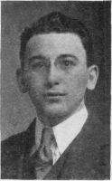
GEORGE JACOB HOROWITZ (born in New York,
1894), educated in the Public
Schools of New York, College
of the City of New York (A. B.
1915), Talmud Torah, and
Teachers' Institute of Jewish
Theological Seminary; President
(1915) of Menorah Society
of City College of New
York; now a graduate student
in Romance Languages at
Columbia.
AKIBA ben Joseph, deservedly called the father
of Rabbinical Judaism, was one of the most
original and the most talented of all the
great galaxy of ancient Rabbis. In him was typified
the great ideal of a Jewish Rabbi—a man of
heart, of hand, and of head. But Akiba is still
more remarkable for the charm and romance of his
life. He is indeed the one Rabbi with a great romance.
The story of his life, stripped of all exaggeration
or literary artifice, reads more like a tale
of "knight and lady" than like the simple facts of
a scholar's life. His great love, his sudden rise from
the humblest obscurity, his brilliant intellectual and
spiritual achievements, and his glorious death, make
up the successive scenes of one of the most inspiring
chapters in Jewish history.
His Youth and Romantic Marriage
AKIBA was born about the year 50, at a time
when the Roman Empire at its height was
about to turn all its mighty forces against his people,
the little state of Judea; and he died a martyr
to his faith, in about the year 132, on the eve of the last great rebellion
against Roman domination. His origin and early years are shrouded in
darkness. We know that he was an unlettered shepherd in his youth and
mistrustful of Rabbis and their learning. His master, Kalba Sabua—so
the story goes—was one of the richest men in Jerusalem, one of the three
wealthy philanthropists who offered to prevent the famine occasioned by
the last great siege of Jerusalem.
While in the service of Kalba Sabua, young Akiba made the acquaintance
of his daughter Rachel. They were immediately drawn to one another,
he attracted by her great beauty, and she by his innate refinement and
superiority. A deep attachment soon sprang up between them. Akiba was
still an illiterate man, however, and Rachel made him promise that if she[228]
were betrothed unto him he would go to the Beth Hamidrash to study. In
those days this was equivalent to acquiring education and culture. To
this Akiba assented and there followed a secret marriage. When her father
learned of what she had done, he became furious. He disinherited her, and
cast her off, leaving her without a roof over her head and absolutely penniless,
and he swore that as long as Akiba remained her husband she would
receive no help from her father. Then set in a period of bitter poverty
for the young pair. Akiba's heart was rent with pain to see his young
wife, who had been accustomed from earliest youth to a home of luxury,
pass her days in a miserable hovel, with the barest necessities and sometimes
even lacking bread to eat. In winter they slept on a pallet and Akiba
would pick the straws out of her wonderfully long and beautiful hair. She
was beautiful even in her rags and tatters, and once Akiba was moved to
exclaim: "Oh, that I had a fitting ornament for thee: a golden image of
Jerusalem the Holy City!" Both indeed were nearest his heart. Once a
man came to the door of their hut and asked for some straw, saying that
his wife was confined to child-bed and he had no couch for her. "Ah, see,"
said Akiba to his wife, "there are those even poorer than we. This man has
not even straw to lie on." This seeming poor man, the Rabbis say, was
none other than Elijah, who had come to comfort them in their misery.
Struggles and Sacrifices for an Education
THE incident did indeed give them new heart, for until then Akiba could
not summon enough resolution to go off and study while his wife
remained behind in such abject circumstances. Nor could she insist. But
now her old strength came back to her, and she reminded Akiba of his
promise: "Go thou, and study in the Beth-Hamidrash." She must have
felt undoubtedly that there were great possibilities in him, and in truth
she was not mistaken. Akiba, however, in his modesty, had no confidence
that he could master the intricate subtleties of Rabbinic law. How could
he, who had now reached forty years of age without once attending even
an elementary school, hope to make any progress at all so late in life? One
day, musing thus, as he stood by the village well, his interest was suddenly
roused by observing that one of the stones had a deep hollow, caused probably
by the drippings of the buckets. "Who hollowed out this stone?" he
asked; and he was answered: "Canst thou not read Scripture, Akiba?
'The waters wear the stones,'—the water, that falls on it continually day
after day, has hollowed out the stone." Immediately Akiba argued
a
fortiori (Kal Vahomer) with respect to himself. "If what is soft can cut
what is hard, then the words of the Torah, which are as hard as iron, will
surely impress themselves upon my heart, which is only flesh and blood."
So Akiba repaired forthwith to a
Melammed Tinokoth, a teacher of children,
[229]
and, seated beside his own little son, he began learning his letters.
Akiba held one end of the A. B. C. board and his son the other.
The elements once mastered, the next step was the Rabbinical academy.
Bitter poverty, however, would not permit Akiba to leave home, and he
would probably have remained in his little village for the rest of his life,
an obscure and unknown man, if it were not for his wife. It was her noble
self-sacrifice that enabled him to become the greatest Rabbi of his time and
perhaps of all time. Unknown to him, she stole out into the market-place
and sold all that beautiful hair of hers, so that he might continue his
studies. Indeed no sacrifice, no self-abnegation, was too great for her.
She sent Akiba away and for twelve long years dwelt alone in sorrow and in
want, a "living widow," and at the end of that period she crowned it with
a renewal of the same great sacrifice. As Akiba was crossing the threshold,
home again after twelve years of study, he overheard Rachel talking with a
neighbor. "It served thee right," said the neighbor, "for marrying a man
so far beneath thee. Now he has gone off and forsaken thee." "If he
hearkened to me," was Rachel's reply, "he would stay away another
twelve years." At these words Akiba exclaimed: "Since she gives me
permission, I will go back to my studies,"—and he went and stayed away
another twelve years. Such was the noble renunciation of Rachel, wife of
Rabbi Akiba, for his sake and for the sake of the Torah.
Akiba's Rise to Recognition and Fame
AKIBA studied assiduously at the schools of R. Nahum of Geniso and
of R. Eliezer and R. Joshua, both renowned teachers, who in their
youth had been favorite pupils of Rabbi Jochanan ben Zakkai. It is
illuminating to consider Akiba's general method of study. He had the
habit, the Talmud tells us, of going alone to meditate over every Halakah
(law) that he learned. After this bit of hard thinking, as we would call it,
he usually came back with some very difficult questions. Only when these
questions were answered did he feel satisfied that he knew the Halakah.
That this thorough method of study bore fruitful results Akiba's subsequent
achievements showed. At first, however, his genius was not evident
and R. Eliezer paid no attention to him. But one day Akiba gave him his
first answer and R. Eliezer was astounded at its profundity. Said R.
Joshua then to R. Eliezer, in a slightly modified Scriptural phrase, "Is not
this he whom thou hast despised? Go thou now and contend with him."
From that time on Akiba was acknowledged a master of Rabbinic law.
All that confused mass of traditional rules, precepts, laws, discussions
and opinions which composed the Oral Law, and which it usually took a lifetime
to master, Akiba made his own within the space of a few years, and at
an age when the mind is no longer fresh and impressionable. Akiba's genius[230]
showed itself even more brilliantly in his subsequent labors in the same field,
which were marked by three great achievements. These were his arrangement
of the Oral Law into a systematic code, the Mishnah (substantially
as later edited by R. Judah Ha-Nasi), his establishment of a logical foundation
for each Halakah, and his discovery and formulation of new and
original methods of hermeneutics and exegesis. To appreciate the magnitude
of these achievements, we must remember that up to and for some
time after Akiba's day, instruction in the rabbinical academies was oral.
Each teacher taught, as well as he could recall, exactly what he had heard
from the lips of his master, and his pupils in their turn did likewise. Every
great Rabbi therefore had his own set of Halakic traditions, his own
Mishnah.
The results of this system or rather lack of system were mainly two:
the reasons for many of the Halakoth were forgotten, and of the laws that
were taught an immense number were uncoordinated, confused and often
contradictory. The greatest fault, however, of these early Mishnayoth
(Mishnayoth Rishonoth) was their general lack of arrangement. The
Halakoth were usually strung together without connection and without
any logical grouping. It was Akiba who first organized them into an
orderly system. He put all the Halakoth dealing with one particular subject
in one group, and then he divided the groups into the six general
divisions that our Mishnah has today. Besides this he introduced number
mneumonics wherever possible, in order to facilitate memorization. The
second work that we owe to Akiba's influence is the Tosephta or Supplement
to the Mishnah, as later edited by his pupil R. Nehemiah. Akiba's purpose
in this Supplement was to give explanatory matter on the Halakoth
of the Mishnah in the form of citations of cases, discussions, and opinions.
Here there was more room for originality than in the first work, for when
the reason for any law had been forgotten Akiba discovered it again.
"The Third Founder of Judaism after Moses and Ezra"
THE achievement, however, in which Akiba's mind revealed itself in all
its brilliant originality, and which more than anything else delighted
and astonished his colleagues, was his new system of Biblical, or rather
Pentateuchal, interpretation, his Midrash ha-Torah. The importance of
these new methods cannot be overestimated. The Oral Law is nothing more
than the Jewish interpretation of the Torah, and consequently new methods
of Pentateuchal exegesis meant the further growth and development of the
Oral Law. Akiba thus gave Judaism the capacity for vigorous further development.
He was indeed a firm believer in the principle that the Oral
Law, even as life itself, is always in process of evolution—"immer in Werden,"
as the Germans put it—but never completed. His main exegetical
[231]
principle is quite simple. The language of the Torah is not like the language
of an ordinary book. In the Torah every syllable, every letter is
fraught with meaning. It is all essence. Hence every detail in the Torah
must be interpreted. There is absolutely nothing superfluous. It was
these exegetical methods that excited the unbounded admiration of his fellow-rabbis.
They said of him that things that were not even revealed to
Moses were revealed unto Akiba. By his preservation of the old Halakoth
in the Mishnah and by his stimulation of newer developments with his
exegesis, Akiba laid the foundations of Talmudic and Rabbinic learning,
and truly earned for himself the title of third founder of Judaism after
Moses and Ezra.
Akiba's method of teaching also was extraordinary. The order and
system that he had brought into the Rabbinic curriculum coupled with
his novel methods of exegesis rendered his lectures clear, simple and most
interesting. Multitudes flocked to hear him. With hardly an exception
all the prominent Rabbis of the following generation attended Akiba's
academy. Notable amongst them was R. Meir, who handed down Akiba's
Mishnah to R. Judah Ha-Nasi and through him to posterity.
Happiness and Affluence
TOWARDS the end of the twenty-four years thus devoted to study,
Akiba turned his steps homewards, accompanied by a large band of
disciples, which tradition numbers in the thousands. At the rumor that a
great Rabbi was coming, Rachel's heart was all aflutter with hope and expectation.
Perhaps it was he at last! The whole village went out to
meet him, she with the rest. When she saw that it was indeed he, she fell
on her knees before him sobbing and began kissing his feet. The pupils
surrounding Akiba wanted to push her aside, but he said, "Let her be.
What knowledge I possess and what knowledge you possess belongs to her."
When Kalba Sabua heard that a great Rabbi had come to town, not dreaming
that it was his son-in-law, he made up his mind to go to him and have
his vow absolved, for at the sight of his daughter's misery his heart had
softened, and but for his vow he would long since have taken her back. He
came to the Rabbi and the Rabbi said to him, "If thou hadst known that
her husband would one day be a great scholar, wouldst thou have vowed?"
"If he knew even one chapter or even one Halakah, I would not have
vowed," was the reply. "I am he," said Akiba simply. At these words
Kalba Sabua stared in amazement, and then fell at his feet and begged
pardon for all his past unkindness towards both Akiba and Rachel. To
make more substantial amends he gave them half his fortune and they lived
in comfort ever after. The affluence in which Akiba henceforth lived, contrasted
with the poverty of his student days when he used to cut wood for
[232]
a living, is thus quaintly described in the Talmud: "When he was a student
Akiba used to fetch a bundle of wood every day. Half he sold for food and
half for clothing. But before Akiba departed from this world, he had
tables of silver and of gold, and he climbed into his bed on golden ladders."
His wife too had the satisfaction of receiving from him and wearing the
"Golden Jerusalem," that Akiba had wished he could give her in the days
of their poverty. Indeed the magnificence of Rachel's jewels called forth
a protest on the part of the students of Akiba's academy. "Thou hast put
us to shame before our wives," they said, "for our wives do not possess
any such precious ornaments." "Ah, yes," said Akiba, "but she has
suffered much with me in the Torah."
Akiba's Virile Ethics and Philosophy
AKIBA'S philosophical speculations were no less famous than his
Halakic activities. Just about this time all sorts of hybrid religions
made up of decadent Greek philosophy and of dying Pagan creeds
were in vogue—the various forms of Gnosticism. Christianity—Jewish
Gnosticism, that is—was only one of the many perversions that Judaism
had to combat. These religions exercised a particular fascination because
they dealt largely in esoteric doctrines and in theosophic speculation.
There was great danger that Jewish minds might be led astray, as in fact
some were. Of the four great Rabbis, who the Talmud says entered upon
theosophic studies, only Akiba came through safely. Upon ben Azzai and
ben Zoma, both brilliant young students, and upon Aher (Elisha ben
Abuya) it had disastrous effects. Ben Azzai died young. Ben Zoma went
mad and Elisha ben Abuyah repudiated Judaism. Wherefore the Rabbis
never mentioned his name but always spoke of him as "Aher" ("the
Other").
Akiba's philosophy and ethics are revealed in the following sayings:
"Labor is honorable to man."
"They err who say I will sin now and repent after. The day of atonement
brings no forgiveness to the insincere." This saying is strikingly
similar to Dante's famous line in the Inferno: "No one can repent and
will at once."
The eternal problem why the righteous suffer and the wicked prosper
is answered by Akiba in this way. The righteous are punished in this world
for their few sins, so that in the next world they may receive only reward.
The wicked on the other hand are rewarded here for what little good they
do, so that in the next world they may receive only punishment.
"Beloved are Israel, for they are called children of the All-present,
as it is said, 'Ye are children unto the Lord your God.' Beloved are Israel
for unto them was given the desirable instrument by which the world was[233]
created, as it is written 'For I give you good doctrine, forsake ye not my
Torah.'" Israel is therefore the Chosen People. Nay more. In another
place Akiba says, "Even the poorest of Israel are looked upon as nobles,"
and even R. Ishmael agreed with him that "Every Jew is a royal prince."
Our motto to-day of "noblesse oblige" is the same thought in a strange
tongue. "By which the world was created" means that Akiba identified
the Torah with "Wisdom," which is described in Proverbs, in that famous
chapter beginning "Doth not wisdom cry and understanding put forth
her voice?" as having been "set up from everlasting, from the beginning
before the earth was." Adapting the opening verse of John, Akiba could
very well have said, "In the beginning was the Torah and the Torah was
with God," but he certainly would not have said, "and the Torah was God."
"Everything is foreseen," Akiba goes on to say, "yet freedom of
choice is given; and the world is judged by grace, yet all is according to
the amount of work." His doctrine of "grace" and "works" was that
"grace" is acquired through works, or in non-theological language, God's
favor goes to the man of good deeds. This was in opposition to the
Christian teaching that "grace" came through faith alone. God's justice
is tempered with mercy; yet even divine mercy is dealt out fairly, says
Akiba. He had such a strong sense of right that he even condemned the
action of the Israelites in despoiling the Egyptians. "It is equally wrong
to deceive a heathen as to deceive an Israelite," he said. Akiba agreed with
Hillel that the chief commandment of the Torah is, "Thou shalt love thy
neighbor as thyself" (Lev. XIX, 18), which again is nothing more than
an application of the principle of justice in our dealings with our fellow-men.
A Man of the People
IN spite of his great fame Akiba was the most modest of men. While still
a student at Jamnia Akiba was noted for his humility. R. Jochanan
ben Nuri told how he had occasion several times to complain of Akiba to
the Patriarch and how each time Akiba took his reprimand meekly. Nay
more. Despite these reproofs Akiba was all the more affectionate towards
R. Jochanan, so that the latter was moved to exclaim in admiration, "Reprove
a wise man and he will love thee!" (Prov. IX, 8.) Another notable
example of Akiba's modesty is his speech at the funeral of his son, which
was attended by a great gathering of men, women, and children from all
parts of Palestine. "Brethren of Israel," said Akiba, "listen to me. Not
because I am a learned man have ye appeared here so numerously. There
are those here more learned than I. Nor because I am a rich man. There
are those here far richer than I. The people of the South know Akiba; but
whence should the people of Galilee know him? The men know him; but
whence should the women and children that I see here know him? But I
[234]
know full well that ye have not given yourselves the trouble to come but
for the sake of fulfilling a religious precept and to do honor to the Torah,
and your reward will indeed be great." Practising it as he did, Akiba
did not fail likewise to preach modesty. "He who esteems himself highly
on account of his knowledge," said he, "is like a corpse lying at the wayside;
the traveler turns his head away in disgust and walks quickly by."
Again, in words almost identical with Luke (XIV, 8-11), Akiba says:
"Take thou a seat a few places below thy rank until thou art bidden to
take a higher place, for it is better that they should say to thee: 'Come
up higher' than that they should bid thee 'Go down lower.'"
Akiba was likewise famous for his kindness and charity. He was a
man of the people. His heart was full of charity and affection for the
multitude. His interest in their welfare was so deep and genuine that he
ultimately came to be called the "Hand of the Poor." As overseer of the
poor, Akiba made many long and arduous journeys to collect funds for
their relief. It was his opinion that the funds of charity ought not to be
invested, in order that ready money might always be at hand, should a poor
man present himself. Once Akiba received some money from R. Tarphon,
for the purpose of buying some land. But instead Akiba distributed the
money to the poor. When Tarphon asked him where the property was,
Akiba showed him the verse in Psalms, "He hath scattered, he hath given
to the poor; his righteousness endureth forever; his horn shall be exalted
with honor." Thereupon Tarphon kissed Akiba on the forehead and exclaimed,
"My master and my guide!"
His Fervent Patriotism
FOR us to-day, however, the most striking thing about Akiba is his
nationalism. Other Rabbis were men of great intellect, other Rabbis
were learned, modest, and benevolent, other Rabbis lived, worked and died
for Judaism, but no other Rabbi was conspicuously and so zealously a
nationalist. Akiba loved "Eretz Yisrael" passionately, not only with the
visionary fervor of the pious Jew, but with the practical idealism of a
patriot. In all his extended journeys for the collection of alms, he took
care to spread and keep alive in the breast of his fellow-Jews the desire
for the rebuilding of Zion as a practical and immediate reality.
It was Akiba's spirit that inspired and animated the last great rebellion
against Rome. This "final polemos," as the Talmud calls it, was preparing
for a number of years. Akiba openly acknowledged Bar Kochba,
who was to be the leader of the revolt, as the promised Messiah, as "the
star that would come out of Jacob." All the great influence, therefore,
of Akiba's moral support was behind Bar Kochba's military preparations.
The Jews had indeed much to complain of. Hadrian had broken faith with[235]
them; he had failed to rebuild their Temple as he had promised, and now
(about the year 130), to make matters worse, he was beginning a systematic
persecution of their religion. He forbade circumcision, the study of the
Torah, the keeping of the Sabbath, the ordination of disciples, in short
everything that went to express the Jewish religion. The Jews determined
upon war. But even before the outbreak of hostilities their greatest loss
occurred. Akiba and several other great Rabbis were captured by the
Romans, imprisoned, condemned to death, and executed. Their crime was
simply that they had continued teaching the Torah in spite of the Imperial
decree.
"Even Unto Death"
THIS was the manner of Akiba's death. When he heard that the renowned
R. Ishmael and a certain Simon were captured, he was
stirred all the more to persevere in his teaching. "Prepare ye for death,
for terrible days are awaiting us," said Akiba to his pupils. A certain
Pappos ben Judah met Akiba assembling the people and teaching the
Torah in public. "Dost thou not fear the Government?" said Pappos.
"Thou art considered a wise man, Pappos," answered Akiba, "but verily
thou art but a fool. I shall give thee a parable to the matter. Once a fox
was walking along the edge of a stream. He saw the fishes in commotion,
hurrying hither and thither. 'Before what do ye flee?' said he to them.
'We are fleeing before the nets of the fishermen that are cast out to catch
us.' 'Would ye be willing to come up on dry land and live with me, even
as your fathers and my fathers were wont to live?' 'Art thou he who is
called the most discerning among beasts? Verily thou art but a fool. If
even in the element that means life to us, we are fearful of death, how much
more so in the element that means our death.' Even so are we. If
even in the time that we are occupied with the Torah, of which it is said,
'For it is thy life and the length of thy days,' we are fearful of death, how
much more so if even for a moment we cease its study." Not many days
later Akiba was captured and thrown into prison. Pappos ben Judah also
found himself imprisoned with Akiba. "How camest thou here?" asked
Akiba. "Happy art thou," replied Pappos, "that thou hast been taken
prisoner for the sake of the Torah; woe is me, Pappos, that I have been
taken prisoner for vain things."
When they led Akiba out to execution it was the hour of the reading
of the "Shema." Tinnius Rufus, the governor, caused his skin to be torn
off with hot irons; but Akiba was directing his heart towards accepting
the yoke of God's kingdom, that he might accept it with love. He recited
the "Shema" with a peaceful smile on his face. Rufus, astounded at his
insensibility to pain, asked him whether he was a sorcerer. "I am no
sorcerer," replied Akiba. "All the days of my life have I grieved that I[236]
could not carry out the commandment, 'Thou shalt love thy God with all
thy heart, with all thy soul and with all thy might,'—even unto death. But
now that I am able to fulfill it shall I not rejoice?" And with the last
syllable of the "Shema"—Hear, Oh Israel, the Lord our God the Lord is
One—Akiba expired.
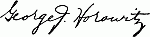
Editors' Note.—This is the third in a series of
sketches of "Jewish Worthies," of which the fourth
will have "Judah the Prince" for its subject.
HEBREWS willingly neglectful of their own inheritance
cannot hope to be of much value as Americans. Nor
is the republic interested in suppressing this or any
other valuable legacy from the past. Our "assimilative process"
is far off from being the terrible thing which European
critics sometimes charge against us. We do reshape peoples
who come to us from the old world, but not at the cost of
the things they cherish or of the gifts they bring. Our civilization
is enriched, not impoverished, by these diverse race
traits, loyalty to which helps to make a loyalty worth having.
If the future world order is to be founded on the harmonization
of ethnic differences, there should be place enough for
such differences in our own peace-aspiring republic.—From
an Editorial in The Boston Herald.
[237]
Aspects of Jewish Life and Letters
As Revealed in Four Noteworthy Books
I
A Sympathetic Study of Pharisaism[B]
AS a rule, Jewish readers approach the works of Christian writers upon
Jewish subjects with distrust. They are accustomed to find in them
either the misrepresentations of Anti-Semitic hatred or the misrepresentations
of conversionist love. The present book, based upon lectures delivered
at Oxford upon the Hibbert foundation, is a representative of the rare
group of studies belonging to neither class. It embodies an earnest and surprisingly
successful attempt to depict justly the religious life of the Jews in
the time of the Talmud. The writer is well prepared for his task by thirty
years' devoted study of Rabbinical literature; he is known as the author of a
careful and scholarly work on "Christianity in Talmud and Midrash."
The book includes a preliminary historical sketch, a study of what the
Rabbis meant by Torah, indicating the true nature of Pharisaic legalism, chapters
on the attitude of Jesus and of Paul toward the Pharisees, and two final
chapters on the Pharisaic theology. The book is valuable as a Christian reply
to Weber, the German author of a learned, widely-used, and thoroughly unfair
presentation of Jewish theology. Mr. Herford frankly confesses that he is an
apologist of the Pharisees, but his book is in no sense an iconoclastic attack upon
the ideas received among Christians as to the character of the Pharisees. He
freely admits, as any fair-minded Jew would, the dangers of the Pharisaic system,
but he is likewise careful to point out that these dangers were by no means
destructive of true spiritual life. It is most refreshing to find a book of this
sort included in the Crown Theological Library, along with the erudite but anti-Jewish
works of Bousset and Harnack.
The Truth About the Pharisees
MR. HERFORD aims to set forth the truth about the Pharisees rather
than to present new ideas or conclusions. Nevertheless, his book
contains here and there new suggestions. His theory that the men of the
Great Synagogue were identical with the Soferim, though it has a certain
plausibility, is hardly supported by any great weight of historical evidence. It
is interesting to learn that the Synagogue represents the oldest form of congregational
[238]
worship, and is the oldest human institution that has survived
without interruption. The parallel between the Hassidim and the Saints of
Cromwell's time (p. 38) is curious. Mr. Herford has the somewhat strange
notion (pp. 44-5) that there is a sign of "mutual distrust" in the weeping of
the High Priest and the representatives of the Beth Din after the former had
taken the oath to observe the regulations concerning the Day of Atonement. To
the ordinary reader of the Mishnah the tears seem a perfectly natural expression
of the emotional strain under which all the people labored on the great day.
It is hard to part from Mr. Herford's admirable book without quoting a
very fine tribute which he pays to the Jewish people. In speaking of the influence
of Ezra's ideals, he says (p. 55): "The Talmud is the witness to show
how some of his countrymen, some of the bravest, some of the ablest, some of
the most pious and saintly, and a host of unnamed faithful, were true to those
ideals and clung to those hopes; and how, through good report and ill report,
through shocks of disaster and the ruin of their state, ground down by persecution,
or torn by faction, steadily facing enemies within, they held on to the
religion of the Torah."
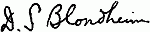
University of Illinois
II
Judaism and Philanthropy[C]
SOME years ago I met a certain Russian Jew at a conference called to discuss
various problems of education. He was an immigrant who had
made his fortune through speculation in real estate, and with his rise in
fortune he had, it was evident, thrown off, one after another, the social habits,
the religious outlook, and the organization of the daily life which were the
heritage he had brought with him from Russia. He was at that time, he told
me, president of a large Jewish congregation, whose pillars of support were
men like himself. He complained bitterly of their backwardness and illiberality.
They would not introduce an organ and refused to change the prayer
book or to secure an "advanced" rabbi. For himself, he did not care whether
they had a synagogue—I mean temple—at all. He retained no longer any of
the superstitions or narrowness of his colleagues, and if it were not for the fact
that he felt himself out of place among members of the radically reformed
temple he would have attended that long ago. He was a member of it, of course.
His wife had made him join some years ago. It was a double expense, to be
sure, but his wife wanted to be active in the Women's Council, and the children
met other nice children in the Sunday School. He did not think anyhow that
synagogal affiliation made any difference.
"I am," he said, "a good Jew. I give charity."
The remark took me aback, yet the logical development to the point of
view that he expressed was inevitable. In an environment where the call of
ambition is generally a call toward de-Judaization, the connection between Jews[239]
who prosper and the great masses of the Jewish people becomes, perforce, an
external and artificial one. It is notorious that the temple has thus far had no
appeal to and no message for the Jewish masses, that its membership is recruited
from the well-to-do and the successful, and that its relation to the great groups
which are destined never to be well-to-do or successful becomes purely a relation
of philanthropy. The elements of brotherhood, of a common consciousness
and a common purpose, fade or get submerged. Where the masses are concerned
the whole corporate essence of reformed Judaism becomes concentrated in the
word "charity."
Justice vs. Charity in the Jewish Ideal
YET it is significant that in Hebrew there is no special word for charity.
The term צדקה (Zedakah) meant originally righteousness, and the
righteousness which the prophets advocated was the substance of social justice.
It was incorporated into the fundamental law of the Jewish state, which differed
from that of other ancient states in the fact that its intention was to
secure freedom and "life" for each individual man. Charity, as we now understand
the word, had no place in the social conceptions of the prophets and was
not acknowledged in the Law. The three codes which are preserved to us in
the Bible from the covenant in Exodus to the extraordinarily profound legislation
of Leviticus express an evolution of the social sense founded on a right
appreciation of social justice and democracy. "Life," and its sustenance food,
and shelter were regarded as the rights of each and every man and not as gifts
from one man to another. The law concerning the tenure of land is particularly
significant for its insight into the economic basis of social justice, and the
laws concerning indebtedness and slavery only less so. Charity appears only
when the state disintegrates. It is coincident with the decay of the social organization
and the consequent failings of the sense of corporate responsibility, and
consists substantially of the conversion of a right into a gift. This change is
registered in the new meaning which the word "Zedakah" receives. For a state
in which social justice prevails there is no room for charity, while a social
order which involves charity is not one which maintains justice. Thus it may
be said that the prophets, because they operated in terms of the reorganization
of the whole of society and not of the incidental correction of piecemeal evils,
were humanists. Their program was constructive and aimed at the enfranchisement
of manhood. The rabbis, on the other hand, were (relatively only) philanthropists.
Their program was remedial, and they aimed rather at the relief of
suffering than the realization and perfection of human potentialities.
To-day the term "charity" has given way to a new equivalent, with a
somewhat different connotation. This new equivalent is "social service." That
it should be urged, as Mr. Lewis urges it, upon liberal Judaism is simply another
indication of the evanescing adherence of that sect to the corporate life
of the Jewish people. Although "social service" carries with it more of the
sense of justice than the term charity, it is still, in intention, a charitable thing.
It is not a thing done through the inevitable forms of right social organization,
but through the gracious good will of a kindly individual. It still maintains
the Christian quality of "grace" which is a condescension, a going down, a[240]
philanthropy. It stands in contrast to law, which knows no such qualities, and
the call which Mr. Lewis makes to liberal Judaists for a special kind of social
service is itself a demonstration that "liberal Judaism" thus far has little in
common with the substance of Jewish life. Indeed his whole book is a demonstration
of this fact, for of the six chapters that it contains only one has anything
to say of social service as such in the present day, while four are analyses,
not of charity, but of the law of righteousness as it operated in the Jewish
polity, both in Palestine and in the Diaspora. Even the actual charity of the
Middle Ages carries a quality of obligation and socially ordained necessity which
is derived from the basic law of the Jewish people.
The Hope of Liberal Judaism
BUT to-day, while the great Jewish masses still live, more or less adequately
under the basic law and exercise such righteousness as they may in the
division of obligation which the laws of the Galuth lands compel, the classes
are divorced from its rule altogether. The call with which Mr. Lewis closes his
book,—
"We must teach the masses of our people, upon whom the Judaism of
yesterday has lost hold, that their salvation lies in liberal Judaism, which
is beginning to find itself to-day and which will become the Judaism of
to-morrow,"
—is the best indication of this. Liberal Judaism has not touched the minds or
hearts of the masses. The radicals despise it as a capitalistic system of compromise
with the social environment. To the rest of the working classes, it makes
thus far no appeal whatever. It is only upon the radicals that the "Judaism
of yesterday" has lost its hold, and to them liberal Judaism can have no appeal.
To the rest of the Jewish people it can be significant and really developed into
the "Judaism of to-morrow" only in so far as it can succeed in reincorporating
itself into the common life. I am an old social service person, and I am prepared
to deny categorically that such a reincorporation is possible through social
service. What is needed is sympathetic intelligence, insight into the life
and aspirations of the masses, return of the classes to the masses, participation
in their ideals, their traditions, and their common life. It is not by a cutting
off from the past, but by a development out of it that such a reincorporation
can be consummated.
If liberal Judaism is to be a living and growing force at all, it can become
so only by accepting the inevitable conditions which govern all life. Life is
organic; religion is only one of the many organs of human society, even Jewish
society. Its health and vitality are dependent upon the health and vitality of
the social residuum. The hope of liberal Judaism lies in a reincorporated
national life for the Jews. That alone can preserve the Jewish religion, either
from petrifying as orthodoxy through resistance against environmental pressure,
or from evaporating as reform through submission to environmental pressure.
University of Wisconsin
[241]
III
THIS little volume is five years old, but its review is always timely; and
for The Menorah Journal very appropriate. The English language
is extremely poor in popular, yet scholarly and well-written books
and essays on Jewish literature. A great many of those who are thoroughly
versed in Hebrew literature, who regard the study of the original Rabbinic
sources as a work of love if not a profession and a life work, have not a sufficient
command of English or of systematic exposition to be able to present the
spirit of these writings in acceptable form to the lay reader. The few scientific
scholars in our seminaries and colleges who could if they chose write authoritatively
and withal in an interesting manner concerning the course of Jewish
thought during the past two or three millenia, prefer to devote their time and
energy to the more technical aspects of the subject, which are not designed for
the uninitiated reader. And the men of journalistic calibre and inclination,
even if we had them, are not the most desirable purveyors of Jewish knowledge.
The truth of the matter is, in the words of Nietzsche, that ears are still growing
for the intelligent American Jewish people so far as Jewish literature—Hebrew
classical literature—is concerned.
The cause of the paucity of works in English on Jewish literary subjects
is really economic. There is no lack of young men among the people of the
Book whose ideal of a well-spent life is one of complete devotion to a scholarly
career in the service of our ancient and medieval classics. But unfortunately
the very young men who give promise of presenting in a creditable manner our
intellectual heritage for the benefit of the majority otherwise occupied, have
no means of their own, and yet are not ready (as it should not be expected of
them that they should be) to take the vow of poverty and celibacy and form
a Jewish monastic order of St. Haninah. Accordingly not a few of these choose
the Rabbinic career as the most likely profession to enable them to keep in
touch with Jewish learning—more or less a disappointed hope to the real
scholar who has no other fitness for the modern Rabbinate except his scholarship.
Others are completely side-tracked and lost to Jewish scholarship.
Thus the lack of interest in Jewish learning and scholarship keeps promising
young men away from these unpromising studies. The result is that the
field in English remains uncultivated, which reacts again unfavorably in a
diminution of interest, and the vicious circle is complete.
The Need of Encouragement to Jewish Learning
I HAVE used my text in good old fashion as a pretext for a little sermon to
the intelligent lay reader of
The Menorah Journal who may be an influential
member of the American Jewish community, pointing out that we are
sorely in need of a great many such books as the present one, treating various
"aspects of the Hebrew Genius"; and they are sure to come just as soon as
[242]
there is a real demand for them. The Jewish students in our colleges and
universities whose number is rapidly increasing have in their midst a great
many talented young men who only need encouragement to devote their best
energies to Jewish learning. These will serve as a leaven to raise the entire
Jewish community of America to a more intelligent Jewish level. What we
need is liberal endowments for Jewish chairs in our universities and for the
promotion of Jewish education generally.
And now to proceed to my proper topic: Aspects of Hebrew Genius is
a very creditable volume consisting of eight well-written essays on several topics
of Jewish history and thought. Norman Bentwich contributes an article in
which he gives an interesting sketch of the Jewish Alexandrian period of the
first two centuries B. C., whose thought activities culminated in the works of
Philo, the first man in history who attempted an amalgamation of Hebraism and
Hellenism. It was not a success so far as Judaism is concerned, as is evidenced
by the fact that he was neglected and forgotten by his Jewish successors. He
was made use of, however, by the early Christian writers in the formulation of
the Trinitarian dogma, and by early Christian apologists and theologians in
presenting the doctrines of the new religion in a form likely to appeal to the
Græco-Roman world, which trained as it was in philosophical thought would
have been repelled by the simple narratives of Scripture and the Gospels.
Representative Men and Tendencies in Jewish Thought
THE next essay by M. Simon deals with the second and more successful
attempt to enrich Jewish literature by infusing into it the spirit of
rationalistic inquiry originally derived from Greece. This time, in the ninth
and tenth centuries, the scene is placed in Babylonia. The place of the Greeks
is now taken by their medieval successors, the Mohammedan Arabs, upon whom
fell a part of the Hellenic mantle, that represented by Greek science and
philosophy. The æsthetic and literary aspects of the Greek genius were left
severely alone by the Arabs. The man about whom this sketch centers is the
famous Gaon of Sura, Saadiah. And Mr. Simon lays great stress upon his
achievements in Biblical exegesis. As the Septuagint was the first Jewish
translation of the Bible, so Saadiah's Arabic translation was the second, and it
was enriched by introductions and a commentary in which Saadiah leads his
co-religionists, the Rabbanite Jews, from the Talmud back to an appreciation
of the Bible.
The period of systematic and rationalistic effort culminated in the legal
and philosophical works of Maimonides, the greatest Jew of the middle ages.
The Rev. H. S. Lewis gives a readable and sympathetic sketch of this pre-eminent
Jewish systematizer and rationalist. He defends him against the strictures
of Luzzatto and Graetz and points out the great influence his thinking had
on Judaism and Jews of his own and subsequent ages, and even on the Christian
scholastics.
The following four essays are devoted not to representative men but to
brief and interesting sketches of tendencies in Jewish thought and departments
of Jewish literature. The Rabbinic legalistic lore of the Mishnah and Talmud,
which finds no general treatment in the volume, is partly represented by the[243]
article of Dr. S. Daiches, who gives a popular account of the post-Talmudic
attempts to codify the immense legal material scattered in Mishnah and Talmud
and in later additions. Maimonides' code naturally occupies an important place
in this sketch, and a novel feature is the important place assigned to Jacob ben
Asher (1280-1340), the author of the Turim, who superseded Maimonides and
is popularized by Joseph Caro in his Shulchan Aruch.
Jewish Rationalism and Mysticism
THE title of the next paper, written by the competent hand of Dr. A. Wolf,
versed in philosophy as well as in Jewish literature, sounds novel; and
as the author says, is the first effort of the kind so far made. It is well known
that the philosophic movement in medieval Jewry is characterized with few exceptions
by the more or less faithful adaptation of Aristotelian thought as represented
in the Arabic translations of his works and in the compendia and expositions
made by such ardent disciples of the Stagirite as Al Farabi, Avicenna,
and Averroes. Dr. Wolf undertakes briefly and readably to indicate how much
the Jewish medieval philosophers owed to the Greek sage and what their attitude
to him was, and interestingly summarizes the Aristotelian point of view by
the one word rationalism, as distinguished from dogmatism and mysticism. He
rightly points out that while the specific doctrines borrowed from Aristotle and
read into the Bible by his ardent Jewish disciples are for the most part obsolete,
the spirit of systematic inquiry, the use of the reason in elucidating disputed
problems, "the exalted conception of the place and function of human
thought, the hallowing of intellectual effort," which was the product of this
philosophical activity, is a gain of inestimable value for all time.
Rationalism and dogmatism, however, do not exhaust the aspects of Jewish
thought and literary endeavor. Parallel with the development of Mishnah and
Talmud and philosophy, there is visible, at first feebly and in the background,
and later, as circumstances favored it, more aggressively and in full view, the
mystic outlook upon life and religion in its various phases. H. Sperling in a
very interesting and sympathetic manner traces this mystic element in Jewish
literature from the Prophets of the Bible, through the "Maase Bereshit" and
"Maase Merkaba" of the Haggadah down to the Sefer Yezira and the Zohar
and its successors.
There is no treatment of Jewish medieval poetry, and the volume closes
with a brief account of the more critical and historical treatment of Jewish
literature created in the nineteenth century by such men as Krochmal, Rapaport,
Luzzatto, Zunz, Geiger and others. Rev. M. H. Segal gives a brief but
illuminating account of this latest phase of Jewish writing, which is not yet
closed, and is likely to stay with us for a long while.
E. M. Adler contributes an eloquent introduction by way of connecting
the necessarily independent essays and emphasizing the unity which the collection
in a great measure possesses.
The volume, as we are told in the Preface, "owes its appearance to the
Union of Jewish Literary Societies" in London, and it does credit to their
earnestness and loyalty to the cause of Jewish learning. Let us hope it may
serve as an example and incentive to the revival of Jewish interests in this[244]
country. It is well that all should read this useful little book and many others
of the kind which we hope will follow. But it is more important that such
reading shall inspire the student with a desire to study at first hand the original
depositories of Jewish thought. For this purpose a serious study of Hebrew is
imperative. And let us cherish the hope that we may witness a revival of, and
a wide-spread interest in, Jewish literature in this country where next to Russia
the greatest number of Jews are found and where, moreover, they enjoy life,
liberty and the pursuit of happiness.
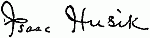
University of Pennsylvania
IV
A General Survey of Jewish Life[E]
THROUGH his Jewish Life in Modern Times Israel Cohen has made a
notable contribution to the literature of Jewish life and thought. In
a single volume of scarce 350 pages of text there is presented a description
and estimate of the Jewish position in the modern world which may
well be considered among the most comprehensive and the most authoritative
now available in the English language.
Taken as a whole, the volume is noteworthy because of three commendable
characteristics. It deals with Jewish life as it appears in modern times, not as
it should be in the light of the literature of the ancient Hebrews. It presents
Jewish life in all its important aspects and complexities, not on the basis of the
theory so widely prevalent that religion, of all human activities, constitutes the
sole binding force and the only distinguishing characteristic of the separate
Jewish existence. Finally, it aims to picture the life of the Jews in all corners
of the Diaspora, and not their problems and activities in a single country or
section of the globe.
Jewish Life Not Synonymous With Jewish Religion
AN exposition of Jewish life as it is actually lived in modern times helps to
clarify a much-beclouded situation. It enables the Jew the better to
know himself; it presents to the outside world a clearer outline of a figure who
must ever, to some extent, remain "strange" and "unknowable." Moreover, the
reader's sense of proportion is adjusted by a work which does not make Jewish
life synonymous with Jewish religion. Whether there is sufficient evidence of
a biological and anthropological character to support the claim of those who
look upon the Jews as a separate race, whether the Jewish people in their dispersion
may properly be considered as a distinct national group in spite of the
absence of a government and a territory of their own, it is certainly difficult, in
all intellectual honesty, to maintain that the Jews are merely a religious community.
One of our brilliant young philosophers has strikingly said that a Jew
can change his religion, but that he cannot change his grandfather; nor, he
[245]
might have added can he destroy his more general antecedents, that complex
of customs, traditions and ideals which have manifested themselves in the course
of thirty-five centuries of recorded history and which create within him an ineradicable
historic consciousness. Jewish solidarity is not grounded in religion
alone, and the distinctiveness of the Jewish people manifests itself in activities
other than religion.
A work which like the present aims to present the Jew in every important
phase of life, which describes the social, political, economic, and intellectual
aspects of Jewish life, as well as the religious, deserves commendation because
of its mere scope and completeness. But Mr. Cohen has gone further. He has
not fallen into the error of many of the spokesmen for the cultural or historical
unity of Jewry of denying or even minimizing the potency of religion as a factor
in Jewish survival. Indeed, he everywhere recognizes that the primary or
motor force in the organization of the Jewish community, which is the
concrete expression of Jewish solidarity, is religious, springing from the
desire for public worship. But while religion is the underlying factor, it is
not the only factor. There is a sane coordination of the leading aspects of Jewish
life, a clear grasp of the relationship between them.
Finally, the work is significant because it seeks to represent the Jew in all
lands, to paint Jewish life in all its diversity. Mr. Cohen, an Englishman intimately
acquainted with conditions in his own country, travelled extensively
on the continent in preparation for his task. But his knowledge of American
conditions was derived from study of American books and newspapers, and from
correspondence, instead of from personal experience. This accounts for such
minor lapses, with regard to American conditions, as the statement that the
Jews are "excluded from . . . . the principal hotels on the east coast of
the United States" and hence "take their holiday in the well-known resorts
of central and southern Europe" (p. 110). On the whole, however, the attempt
to describe Jewish life in all its diversity, as it is lived by Jews in all lands,
is crowned with marked success, and the author has ample justification for his
claim that he has brought "within the covers of a single book the fullest description
yet attempted of all the main aspects and problems of Jewish life in
the present day."
The Various Aspects of Jewish Life
A MORE detailed statement of the scope and plan of the work may best be
given in the author's own words. "First, a General Survey is presented,
showing the dispersion and distribution of Jewry in its countless manifestations,
its diversity of composition in political and spiritual respects, and the solidarity
that unifies its disparate elements. Then follow five main sections, in each of
which a leading aspect of life is investigated—the social, the political, the economic,
the intellectual, and the religious. Under the Social Aspect are set
forth the growth and constitution of the community, the characteristics and
customs of the home, social life and amenities, morality and philanthropy, and
racial and physical conditions. Under the Political Aspect are related how
one-half of the people acquired civil equality, how the other half is still suffering
in bondage, and what services Israel has rendered to so many countries in both
their government and their defence. Under the Economic Aspect are reviewed
[246]
the different spheres of commercial, industrial and professional activity in which
Jews are engaged, the contrasts of material welfare and predominance of poverty,
and the ceaseless currents of migration from the lands of bondage to the
havens of refuge. Under the Intellectual Aspect are considered the advance
made by secular education among the Jews, the nature of their national intellectual
products in modern times, and the contributions they have rendered to the
progress and culture of humanity. Under the Religious Aspect are described
their ecclesiastical organization and administration, their traditional faith and
observance and the growing divergences therefrom, and then the drift and
apostasy that are assuming ever more alarming proportions. Finally, the resultant
tendency of all the foregoing manifestations is examined under the
National Aspect, the strength of the forces of assimilation and absorption is
contrasted with the inherent force of conservation, and the realization of the
Zionist ideal is urged as the most effective means of ensuring the perpetuation
of Israel" (pp. viii-ix).
The purpose of the author is thus seen to be, first, to present the facts of
Jewish life, and secondly, to offer an interpretation of them—"to depict the
variegated life of the Jewish people at the present day in all its intimacy and
intensity, and to trace the evolution that is being produced by modern forces"
(p. viii). He is more successful in the first of these objects than he is in the
second.
His shortcomings in interpretation, however, are negative rather than positive;
they are due to omission rather than to commission. There is inadequate
consideration of the philosophy of Jewish life; external description has crowded
out internal analysis; the point of view is too largely objective. While, for
example, the conclusion is reached that Zionism is the only permanent and adequate
solution of the Jewish problem—with which we do not disagree—insufficient
stress is laid upon the distinctive Jewish obligation in the Diaspora; the
Jewish contributions to general culture and progress which the author enumerates
with such concreteness and detail are not distinctively Jewish contributions.
Even if Zion is the ultimate destiny of the Jew, he must, in the meantime,
justify his separate existence among the nations; if he is to remain a Jew as
well as a citizen of the world, his contribution must be that of a Jewish citizen;
in addition to the general obligation of his citizenship, he must fulfil the special
obligation of his Jewishness. But these deficiencies of interpretation, like the
inadequacies of description arising from the impossibility of treating exhaustively
so large a field within so narrow a compass, but reflect the inherent limitations
of the task set himself by our author.
University of Michigan.
JEWISH STUDENT ORGANIZATIONS
An Excerpt from Israel Cohen's Book, "Jewish Life in Modern Times,"
pages 105-106:
"It was not until the last quarter of the nineteenth century that the Jewish
students at any of the principal seats of learning were numerous enough to form[247]
a society of their own. The first organization was founded in 1882 in Vienna by
Jewish students from Russia, Rumania, and Galicia, who entitled their society
Kadimah, which means both 'Eastward' and 'Forward,' as an indication of the
ideal of a resettlement in Palestine which they advocated. Since then, partly
as a result of the advance of Zionism and partly as a result of the anti-Semitic
attitude of the general students' corps on the Continent, separate societies have
been formed by the Jewish students at almost every university at which they
number at least a dozen, and are now found in Germany, Austria-Hungary,
Russia, Switzerland, France, and Holland. Some of these societies owe their
existence simply to the exclusion of Jews from the general corporation, and
they adopt a passive attitude on Jewish questions, but the majority are animated
by the ideal of Jewish nationalism and actively foster the Zionist cause. The
Jewish nationalist societies in Germany are grouped into two organizations, the
'Bund Jüdischer Corporationen,' founded in 1901, with a membership of over
600 (graduates and undergraduates), and the smaller, 'Kartell Zionistischer
Verbindungen,' founded five years later, with a membership of 250. The Zionist
students' societies in Holland were federated in 1908, but those in other Continental
countries pursue an unattached existence. Established to assert and
promote the principle of Jewish nationalism, these corporations have nevertheless
adopted all the methods and conventions of German corporations; they each
have their distinctive colors, and they hold 'beer evenings' at which the students
sing spirited songs in swelling chorus around tables which they bang with their
beer-mugs, presided over by officers who are accoutred in a gorgeous uniform
and armed with a sword that does duty alternately as chairman's hammer and
conductor's baton. But their songs tell not of Teuton valor but of Jewish hope,
breathing the spirit of a rejuvenated people. Besides these convivial gatherings
the members cultivate the study of Jewish history, literature, and modern problems,
and also practice fencing so as to be prepared for any duel in which they
might be involved in vindication of the Jewish name. The Jewish societies at
the universities in English-speaking countries are not, like the Continental corps,
the inevitable product of an unfriendly environment, but voluntary associations
for the study of Jewish questions and for social intercourse. The Jewish
students in England, and to a less extent in the United States, join the societies
of their university; but their racial sympathies prompt them also to fraternize
with one another. Thus, Oxford has its Adler Society and Cambridge its
Schechter Society, whilst at both universities there is also a Zionist Society.
Moreover, in the United States, 'Menorah' societies for the study of Jewish
history and the discussion of Jewish questions have been formed at twenty-five
Universities and organized into an Intercollegiate 'Menorah' Association with
over 1000 members."
[There are now 37 Menorah Societies, with an approximate membership of 3,000.—Ed.]
[248]
The Symbolism of the Menorah[F]
By Hyman Askowith
AFTER the severe and constantly-expanding test of nearly a decade,
the founders of the first Menorah Society may be permitted to
felicitate themselves on their choice of the name. For it was far
truer of the Menorah than it is of most organizations that the choice of
a name was of vital moment, and the founders were impressed by a number
of considerations which we can all fully appreciate even today. They
were bent upon choosing a name which would not deter any Jewish student
from enrolling under it with avidity; which would not excite opposition
from any source; which would command respect and reverence, increasing
respect and reverence, both from the University public and the general
public; which would be voluntarily adopted by similar societies in other
Universities in preference to any other that might be suggested; and finally,
a name with enough charm and euphony and significant symbolism to stand
constant repetition, to bear living with day by day, and all the while
grow in our imaginations and yield new beauteous meaning through the
years.
From a descriptive standpoint, it would be difficult to find a more
appropriate name for a University society devoted to Hebraic culture
than the name Menorah. For there is hardly another available word in
the entire range of Hebraic history and learning which is so freighted with
sentiment and so symbolic of all that Israel stands for.
The Most Expressive of All Hebraic Symbols
TAKEN in a general sense, it is evident that the Menorah or seven-branched
candelabrum, being the distinctive lamp or light of the ancient
Hebrews, serves more distinctively than would the classic torch or the
conventional oil lamp to represent Hebrew enlightenment. Our aim being to
spread the light of Hebraic culture, it is clearly fitting that we should
employ the Hebraic lamp. It should be more effective, too, inasmuch as
its light is sevenfold, and our efforts are illuminated with a sevenfold
splendor.
The word Menorah, it is worth noting, is among exclusively Hebrew
words the only one which would be readily understood by any considerable[249]
number of people aside from students or readers of Hebrew. It has
been made familiar to all by the representation of the captured Menorah
on the Arch of Titus (see Frontispiece).
According to the Bible, the original Menorah was of divine pattern.
It was ordained by God in his instructions to Moses for the sacred paraphernalia
of the Holy Tabernacle (Exodus XXV, 31 et seq.). The Menorah
was thus among the first instruments or tokens of the Hebrew religion,
and the only one which in any sense is in our possession today—the
only one which can be perpetuated. The divine pattern is still with us
and we are repeatedly modeling new copies from it. The Menorah is today,
therefore, the most expressive of all concrete symbols of the Hebrew
race and religion.
A Favorite Object of Metaphor and Poetic Sentiment
A HALO of symbolism—almost kaleidoscopic in its manifold beauty—surrounds
the Menorah in Hebraic literature and tradition. Both the
single light or candle, and the distinctive combination of seven, are the favorite
objects of metaphor, interpretation, and poetic sentiment. In the
Bible the word "ner" (נר)—candle or light, embodied, of course, in
the word Menorah (מנורה )—is used metaphorically in many significant
senses. God is a light—enlightening, comforting and honoring his people.
The rational understanding and conscience are lights which search, inform,
direct and judge us. A profession of faith is called a lamp, which renders
men shining and useful and instructors of others. The last two interpretations
certainly cast an appropriate reflection on our choice of
Menorah.
For the number 7, as we all know, the ancient Hebrews had a singular
fondness, attributing to it a magic potency. This may have arisen
from the traditional story of the seven days of Creation, and the institution
of the Sabbath—without a doubt the most important of Hebrew institutions.
This certainly enhanced the reverence for the number 7, which
soon became the most sacred Hebrew number, bearing nearly always the
connotation of holiness and sanctity or mystic perfection. The acts of
atonement and purification were accompanied by a sevenfold sprinkling.
There were seven trumpets, seven priests that sounded them seven days
around Jericho, seven lamps, seven seals, etc. The seventh day was the
Sabbath, the seventh year was the Sabbatical (still observed to the well-earned
emolument of our professors in the Universities), and seven times
seven years brought on the Jubilee. The seventh month was the holiest
month of the year (which we appreciate now by regarding September as
an auspicious month in which to return to college studies). The number
seven soon came to be used also conventionally as an indefinite or round[250]
number, indicating abundance, completeness, perfection.[1] Cicero calls
seven the knot and cement of all things, as being that by which the natural
and spiritual world are comprehended in one idea.
The Manifold Symbolism of the Seven Lamps
BE that as it may, our ancestral learned men seem to have found no end
of significant meanings in the seven lamps of the Menorah. Generally
it was held to represent the creation of the universe in seven days, the
center light symbolizing the Sabbath. Again, the seven branches are the
seven continents of the earth and the seven heavens, guided by the light
of God. According to Philo and others, the seven lights represent the
seven planets which, regarded as the eyes of God, behold everything.
[2] The
light in the center, which is especially distinguished, would signify the sun,
as the chief of the planets. With this was combined the mystic conception
of a celestial tree, with leaves reaching to the sky and fruit typifying
the planets.
There would be little difficulty, of course, in extending this symbolistic
catalogue ad infinitum. We could easily and perhaps profitably select
Seven Wonders of Hebraic history or achievement, seven great epochs in
the development of Hebraic culture, seven great leaders of the race, etc.
We might also say that the seven lights represent the seven chief studies
which make up a liberal education—the Trivium and Quadrivium of the
Middle Ages, substantially the foundation of the university curriculum of
today[3].
The words יהי אור, "Let there be light," just above the Menorah
on our seal, are not only reminiscent of the first great word of God, pregnant
in meaning for humanity, but stand also for the purpose of this
Society—the relighting of the Menorah in order that it may shed its
ancient lustre and once again illumine the minds of men with the glory and
uplift of Hebraic ideals.
[251]
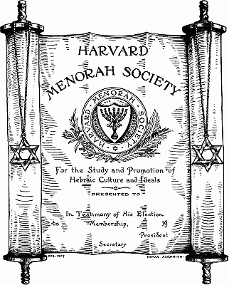
REPRODUCTION (ONE-FOURTH THE SIZE OF THE ORIGINAL) OF THE MEMBERSHIP
SHINGLE OF THE HARVARD MENORAH SOCIETY, ADOPTED IN ITS FIRST YEAR
(1906-07)
[252]
The Symbolism of Palm and Olive Branch
THE seal as originally drawn for the Harvard Menorah Society (see accompanying
illustration of membership shingle) bears two or three
other symbols which deserve a word of interpretation. Below the Menorah
appears the so-called Star of David—lately revived by the Zionist movement
as the only exclusively Jewish figure or geometric symbol of any national
meaning. Entwined below the seal proper are an olive branch and a date
palm, both of which are intimately associated with the history of the race
in Palestine. They are the two most characteristic trees of the promised
land, and provided the chief staple foods of the Hebrews during their occupation
of the country. The olive, moreover, gave the oil with which the
Menorah was lit. There is also much fascinating symbolism in the olive
tree and the palm. Both are evergreens—standing for the persistency of
the Hebrew race. The date palm, we are told, has a slender and very yielding
stem, so that in a storm it sways back and forth but does not break;
and throughout its length it bears scars showing where leaves have fallen
off. Could anything be more beautifully expressive of the career of the
Jewish nation? Finally, the olive branch has always stood for peace—one
of the most cherished and distinctive Hebraic ideals; and the palm has
always stood for intellectual achievement—and who would deny the palm
to the race that gave the world its Bible and all that it stands for?
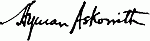
[253]
The Decennial of the Menorah
Movement
THE Menorah movement enters upon its decennial with the beginning
of the present academic year, the first Menorah Society having
been organized at Harvard University in 1906.
[G] From this Society
with an original membership of sixteen, the Menorah movement has grown
throughout the country so that at the close of the last academic year there
were Societies at thirty-seven colleges and universities with a membership
of some three thousand. Every Society has arisen upon the initiative of
the students themselves, inspired by a desire to pursue the objects embodied
in the Menorah. In January, 1913, the Intercollegiate Menorah Association
was formed for the purpose of mutual encouragement and co-operation
among the several Societies, and also to carry out enterprises beyond the
scope and power of any individual Society—such as the publication of
The Menorah Journal.
On the threshold of the decennial, and especially since the present
number of the Journal will come into the hands of many new students and
readers, it may not be amiss again, in brief terms, to review the purposes
of the movement.
The Three-Fold Purpose of the Menorah Organization
THE Menorah Societies have been organized by the students in
response to their desire first of all to know more about the history,
literature, religion—in a word, the culture and ideals of the Jewish people,
and the conditions and problems which confront the Jews in the world
today. Being thus educational in primary purpose, every Menorah
Society is open to all the members of its university who have an interest in
Jewish life and thought. And inasmuch as the great majority, if not all,
of the students who have such an interest in Jewish knowledge and Jewish
aspirations are themselves Jews, the Menorah organization cherishes the
second purpose of strengthening the Jewish idealism and
noblesse oblige
of the Jewish students, so that by understanding and carrying forward
their Jewish inheritance they may become better men and women by becoming
better Jews. And from this moral aim there flows still a third purpose,
[254]
that of patriotic service to the Republic; for by enriching the common
treasury of American culture and ideals with the spiritual resources of
the Jewish people, the educated Jews of the country may serve America
to the profoundest degree. Animated thus with the spirit and broad purposes
of our universities, the Menorah Societies have been warmly welcomed
and generously assisted by the university authorities.
The Distinction Between Menorah and Other Student Societies
THE purposes of the Menorah movement will appear in greater relief
by comparison with the objects of other types of Jewish
organization—social, political, religious—that have arisen at our colleges and
universities. The Menorah Societies are all-inclusive, non-partisan, non-sectarian.
Hence they are to be distinguished in the first place from the
exclusive social organizations, such as the Greek letter or Hebrew letter
fraternities. Being rather educational in spirit and purpose, the Menorah
Societies make no social test for membership, nor do they pursue any
convivial activities except such as are deemed desirable for the most agreeable
and efficient pursuit of the Menorah objects. Again, the Menorah
Societies are clearly distinguishable from the Zionist Societies, which were
united last June in the Intercollegiate Zionist Association of America;
whereas the Zionist Societies are devoted to a specific political program in
confronting the so-called Jewish Question, the Menorah Societies, being
non-partisan, are neither Zionist nor anti-Zionist, but perfectly free and
open forums for the discussion of all points of view. The Menorah membership
consists of men and women of divers convictions, as well as of
those who have not yet made up their minds but come to the Menorah
for enlightenment and inspiration. Finally, just because the Menorah
appeals to every student who has a liberal interest in Jewish life and
thought—to every Jewish student particularly, whatever his present beliefs
and ideas—the Menorah Societies are not to be regarded as specifically
religious organizations. Therefore the observance of religious services
and practices is left to those students who desire them, individually or in
appropriate organizations, such as the Jewish Students' Congregation
organized recently under reform auspices at the University of Michigan.
The Menorah Societies are neither reform, conservative nor orthodox but
broadly inclusive of all elements.
The Catholicity and Comradeship of the Menorah
INDEED, next to the Menorah idea—the sum of Menorah purposes—the
peculiar strength of the Menorah Societies lies in this catholic
spirit which determines the Menorah "open door." Thereby the Menorah
[255]
Societies are enabled to perform more and more an incidental but most important
service apart from the objects to which they are formally dedicated.
With the growth of various Jewish organizations in our universities—which,
whatever the opinion as to their value and propriety, tend to
divide the Jewish students rather than to unite them—a most important
service performed by the all-inclusive Menorah Societies is to bring the
students together, in spite of their various differences, on a common high
plane. As stated over a year ago in the Association's book on
The
Menorah Movement: "Where, as in almost all large universities, there
are Jewish students of diverse antecedents, it is one of the most important
functions of a non-partisan organization like the Menorah Society to
bring all classes and parties together upon an academic plane, in order
that they may learn each other's points of view, in order that their
prejudices against one another which are founded on misunderstanding and
snobbishness may wither away, and in order that they may pursue in
generous comradeship the knowledge of their common tradition and the
hope of their common future."
The Graduate Phase of the Menorah Movement
IT is becoming increasingly evident, moreover, that such a unifying force
is called for outside of the universities among the graduates and other
educated Jews; and it is hoped that through the graduate phase of the
Menorah movement, this need may be subserved by graduate Menorah
groups in various communities. To quote once more from The Menorah
Movement: "Such graduate Menorah organizations, while academic and
non-partisan in their nature, like the university Menorah Societies, might
yet, if properly constituted and conducted, be of practical as well as of
ideal service to their communities. They could bring together, upon the
lofty basis of Jewish idealism, men of different views in the community,
who approach practical Jewish problems in different, sometimes in
mutually antagonistic, ways. Devoid itself of any sectarian or fraternal
or political bias, a graduate Menorah organization should be ideally fitted
to serve as a kind of intellectual clearing house of the Jewish community,
and thus promote on all sides a deeper understanding of one another, a
clearer vision of the common problems, a greater concord in Jewish life."
In any event, it is hoped during the present year to bring the graduates
and other public-spirited Jewish citizens into closer touch with the activities
and aspirations of the students. At the fourth annual Convention of
the Intercollegiate Menorah Association to be held during the coming
midwinter recess, the idea of graduate Menorah committees and other
forms of possible graduate association with the Menorah movement will
be carefully considered.[256]
The Year Ahead
IT may be added that at this Convention, which promises to be the most
important thus far held by the Menorah Societies, there will also be
given a full review of the activities of the Menorah organization since its
inception and a survey of the present opportunities and demands for
Menorah work throughout the country. More and more emphasis will be
laid upon the quality of accomplishment of every Menorah Society; upon
the active participation by all Menorah members in one phase or another of
Jewish study and labor; and, in general, upon an even greater utilization
of the lectures, libraries, study courses, and other means provided for the
accomplishment of Menorah ends.
In this terrible time for Jewry, amid the general catastrophe, when
hundreds of thousands of Jewish young men are offering their lives
heroically in the contending armies, the members of the Menorah Societies
in this favored country cannot but enter upon the new year with a solemn
sense of added responsibility. More than ever in this decennial year of
the Menorah movement is intellectual and moral consecration to Jewish
ideals demanded of Jewish students in America.
Henry Hurwitz, Chancellor
I. Leo Sharfman, President
[257]
Menorah Notes and News
The International Students' Reunion
THE Intercollegiate Menorah Association
was represented at the International
Students' Reunion, which was
held in connection with the Panama-Pacific
International Exposition at San Francisco,
the University of California, and Leland
Stanford University, under the auspices
of Corda Fratres Association of Cosmopolitan
Clubs, from August 16th to 21st,
1915. Intercollegiate Vice-President Milton
D. Sapiro read a paper at the session
in the Civic Auditorium, San Francisco,
on "The Purposes of the Menorah Movement,"
submitted by the Chancellor. Dr.
Horace M. Kallen, of the University of
Wisconsin, delivered a discourse at the
session at Stanford University on "The
Hebraic Spirit." The following is an
abstract of his address:
Dr. Kallen on "The Hebraic Spirit"
"A people's spirit is its character, considered
not as a cluster of qualities, but
as a spring and form of action—action
that expresses itself in social institutions,
in political and economic organization, in
art, in religion and in philosophy; in short,
in all that expressive part of human life
we call culture. A people's culture is
organic. However varied its form and
media, the varieties springing from a
single source possess an identical and
unique quality which is the quality of that
source. They express and reveal it, as
generative power, a force of creation,
having good or evil bearing upon the
residual civilization. The process of such
revelation is a people's total history; just
as the process of revelation of an individual's
character is his total biography. To
find the Hebraic spirit we must seek its
substantial development in the culture and
ideals of the Jewish people—in the unfoldment,
in the history of their common
attitude toward the world and toward
man, in their theory of life.
"The Jewish theory of life involves
three fundamental conceptions, interdependent,
and forming a unit which has no
near parallel in civilization.
"The first of these conceptions defines
the nature of God. What is significant
about it is the fact that it makes no distinction
between God and Nature. God
is Nature and Nature is God. The two
are related to each other as a force and
its operation, and what difference there
exists between them is a difference in completeness
and self-sufficiency, not in kind.
God reveals himself thus in and as the
cause of Nature, the whirlwind, the process
of life and decay, the development of
history. His essence is Change, Force,
Time. There is hence no Hebrew word
for eternal; God's attitude is everlasting.
That is, that which changes yet
retains its identity, as a man changes from
infancy to manhood, yet retains his identity.
"God is one, all-inclusive, everlastingly
creative. In consequence, there exists a
real distinction between God and man,
such that the one cannot be defined in
analogy with anything human. Neither
wisdom, nor goodness, nor justice apply
to him; yet the goodness, wisdom and justice
of man depend upon him. Man is a
finite speck set over against divine infinitude.
His life is a constant struggle for
survival with forces which have each an
equal claim on divine regard with man.
Man's salvation, herein, consists in knowing
these facts, in understanding, using
them, and guarding against them. The
fear of the Lord, sings the chorus in Job,
is the beginning of wisdom, and to depart
from evil is understanding.
"To depart from evil is to act as a
social being, to be righteous. Righteousness
is acknowledgment of the value and
integrity of other persons. It is the application[258]
of justice in all fields of human
endeavor, particularly in fundamental
economics. Thus the three historic constitutions
of the Jewish state, the Covenant,
Deuteronomy and the Levitical code,
are all directed toward making impossible
other than natural inequalities within the
state. Their intention is a social democracy;
and all Jewish law, departing from
this fundamental intention, aims, under
various conditions, to realize it. The
prophets, from Amos to Isaiah, preach it;
and men like Ferdinand Lassalle, Karl
Marx, Jean de Bloch, simply enhance their
tradition.
"The Hebraic spirit carries the principle
of democracy beyond the individual to
the group. Men having a common ancestry,
history, culture and ideals, living
a common life, have definite contribution
to make to civilization as a group. They
constitute a nationality and the principles
of justice that apply among individuals
must apply equally among nationalities.
Hence Hebraism, through its prophets,
formulates the conception of an internationalism,
consisting of a co-operative democracy
of nationalities, under conditions
of universal peace. The great Isaiah, who
flourished in the fifth century B. C., is the
first to formulate this national vision. His
people have never departed from it. In
terms of it, they have been the foremost
protagonists of a constructive internationalism,
in every land and at all times.
Recently, as they have begun to find that
their service to civilization as a people
grows more and more impaired by the
Diaspora, they have formulated a program
of national reconcentration in Palestine,
and of the free development there of
Hebraic culture and ideals such as all
European peoples carry out in their own
homelands of their culture and ideals.
This program is called Zionism. It is the
practical and most expressive incarnation
of the Hebraic Spirit."
California Menorah Society
THE California Menorah Society met
on Monday evening, August 30th,
for its first meeting of the college year.
There was an attendance of 125. Mr.
Louis I. Newman gave a short talk on
the aims of the Menorah movement. Milton
D. Sapiro, first President of the
California Menorah and now the second
Vice-President of the Intercollegiate
Menorah Association, spoke on the history
of the movement, tracing the development
of the Menorah idea and the formation
of the Intercollegiate body; and in closing
he presented Stanley Arndt, now President
of the Society, with a bronze Menorah,
which is to be handed down from President
to President each year. President
Arndt, in accepting the Menorah, said
that it suggested the great problem that
the Jews are now facing. The great question
at the present time is whether this
Menorah will be a mere symbol of the
past glories, the past achievements of the
Jews, whether it is to be a mere monument
of a dying race, or the living emblem
of a living race, the soul of a living
people. As an exponent of the latter doctrine,
he introduced Dr. Horace M. Kallen
of the University of Wisconsin, Intercollegiate
Menorah Lecturer.
Dr. Kallen spoke on "The Jews and
the Great War." He pointed out that
democracy in its essence was the liberation
of individuality; that by being most
one's self, a person or a nation does the
most for his neighbors. First of all, therefore,
we should know ourselves. Dr. Kallen
then took up the condition of the Jews
in Russia. He discussed the frightful persecutions
there as the result of a great
anti-Jewish conspiracy to cover up the
graft, the corruption and the inefficiency
of the government. He spoke on the great
drive of the Jews from the Pale by the
military authorities and then the drive
back again by the civil authorities. This,
he pointed out, involved not only a Jewish
problem, but a great international one
besides. The second phase of the Jewish
question was that of a free Jewish life
in Palestine. There the Jewish colonists
have practically an autonomy of their
own; they have established a Jewish
stage, Jewish art, Jewish music; and the
colonies were founded upon a social democratic
basis, upon the same fundamental
conceptions of social democracy that the
Hebrew Prophets had preached. Dr. Kallen[259]
concluded with a plea for the Jew's
double responsibility. The Jew commits
a crime hot only as a citizen but as a
Jew. The Jews who in length of service
to the world are surely an aristocracy
must carry this responsibility.
In the discussion which followed, Professor
Simon Litman of Illinois, who was
present, took part.
A Menorah prize of $50. was announced
at this meeting. The judges will
be Professor William Popper and Dr.
Martin A. Meyer of the Semitics Department
of the University, and Judge Max
Sloss of the Supreme Court of California.
A musical program, followed by an informal
reception to the new members,
completed the evening.
N. M. Lyon, the Treasurer of the Intercollegiate,
formerly of Cincinnati, is
now a student at California and a member
of the California Menorah.
Dr. Kallen on the Pacific Coast
BESIDES his address at the opening
meeting of the California Menorah
Society and other informal talks with the
students, Dr. Kallen delivered a series
of three addresses at the University of
California, under the auspices of the
Department of Philosophy, on the general
subject: "The Hebraic Tradition in
Europe." On August 31st, he lectured
upon "The Rise and Significance of the
Hebraic Tradition"; on September 1st,
"Hebraism and Democracy"; and September
2nd, "Hebraism and Art."
On August 30th, Dr. Kallen met a company
of graduates and other public-spirited
Jewish citizens in San Francisco at luncheon
and explained the purposes and activities
of the Intercollegiate Menorah Association.
Dr. Kallen addressed the Menorah Society
of the University of Washington in
Seattle on August 14th, on "The Jewish
Question and the Great War." He also
met at a dinner a company of graduates
and other public-spirited Jewish citizens
in Seattle, and explained to them the purposes
and activities of the Intercollegiate
Menorah Association.
Dr. Harry Wolfson of Harvard
HARRY AUSTRYN WOLFSON,
the author of the articles on "Jewish
Students in European Universities,"
published in the first two numbers of the
Journal, has been appointed Instructor in
Jewish Literature and Philosophy at Harvard
University. He received his Ph.D.
from Harvard last June in the field of
Semitic Philology, his thesis subject being
"Crescas on the Problems of Infinity
and Divine Attributes."
During the ensuing year he will give
the following courses: Post-Biblical Hebrew,
Jewish Aramaic, Jewish Literature
and Life From the Second to the End of
the Seventeenth Century, and An Introduction
to Medieval Jewish Philosophy.
Cornell Summer Meeting
ON August 8, 1915, the Cornell
Menorah Society held a meeting for
the summer students. There was an
attendance of about 50, both Jews and
non-Jews. Rev. Dr. H. P. Mendes, of
New York, gave an address on "Bible
Ideals in Modern Times," and Professor
Frank Carney of Denison University,
Professor of Industrial Geography in the
Cornell Summer School, spoke on "The
Inorganic Basis of the Hebrew Contribution
to the World." Professor W.A.
Hurwitz of Cornell spoke briefly on the
scope of the Menorah movement, and Dr.
L. L. Silverman played Kol Nidre on the violin.
Hunter Menorah Society
THE Menorah Society of Hunter
College, in New York City, begins
its third year with a marked increase in
the enthusiasm and the number of its
members. A program dealing with various
phases of Hebrew culture has been
planned for the regular monthly meetings,
comprising lectures on the Bible, the Talmud,
Medieval Hebrew Poetry, Modern
Hebrew Literature, Hebrew Music, and
Hebrew Art. In addition, the Society
hopes to present a pageant and a reception
to freshmen in February (for Hunter
College admits two classes during the
[260]
year). The lectures will be preceded by
refreshments, and the singing of Hebrew
songs by the Menorah Glee Club.
Besides the regular monthly meetings,
the Society is organizing courses in conversational
Hebrew, Bible Study, and
Zionism—the first to meet weekly, the
others on alternate weeks.
It is also hoped to have a general informal
meeting every week to discuss
modern Jewish problems in connection
with the reading of various newspapers
and periodicals.
College of the City of New York
THE Menorah Society of the College
of the City of New York closed its
activities during the past year with a very
interesting meeting held on May 20, 1915.
Rev. Dr. H. Pereira Mendes spoke on
"Jewish Ideals of Peace," and he was introduced
by the new President of the College,
Dr. Sidney Edward Mezes, who
presided. Dr. Mezes has come to City
College from the University of Texas,
and it is gratifying to note that he had already
been made familiar with the
Menorah work through the Texas
Menorah Society.
The new year was opened with a forum
meeting on September 21st, in the
Menorah alcove, when the Chancellor addressed
a number of new men as well as
old, upon the significance and the increasing
scope of the Menorah movement. The
week beginning October 3rd will be known
as "Menorah Week" at the College.
On Monday, October 4th, the study circles
will meet for the first time; on Tuesday
there will be another meeting of the
Menorah forum; on Wednesday a semi-annual
smoker will be held in the City
College Club; and on Thursday, Mr.
Marcus M. Marks, President of the
Borough of Manhattan, will deliver a
lecture to the student body under the auspices
of the Menorah Society.
Fourth Annual Convention
IMPORTANT matters touching the
development of Intercollegiate activities,
the work and membership of the
constituent Societies, the association of
graduates with the Intercollegiate body,
the problems and plans of The Menorah
Journal, will be among the subjects presented
for discussion and decision at the
Fourth Menorah Convention, to be held
during the coming mid-winter recess. The
precise days and place of the Convention
will shortly be decided by the Administrative
Council, in accordance with Article
II, Section 4, of the Intercollegiate
Constitution. In addition to the business
sessions there will also be a formal dinner
and an academic session devoted to the
reading of papers by eminent scholars. It
is hoped that a large number of Menorah
men and women from all parts of the
country will be able to attend. Further
details will be published in the next number
of the Journal.
Informal Gathering of Menorah
Officers
ON June 21, 1915, there was an informal
gathering at the headquarters
of the Intercollegiate Association, 600
Madison Avenue, New York City, of
Menorah officers who happened to be in
New York. There were present, besides
the Chancellor, President I. Leo Sharfman,
Vice-President Abraham J. Feldman,
and Secretary Charles K. Feinberg
of the Association, President Stanley
Arndt of California, President Jacob
Rubinoff of Pennsylvania, ex-President
Leon J. Rosenthal of Cornell, ex-President
George J. Horowitz, President
Moses H. Gitelson, Treasurer Herman
I. Trachman of College of the City of
New York, President Bernard J. Reis of
New York University (Washington
Square), ex-President Samuel Sussman of
Columbia, President Sarah Berenson,
Vice-President Babette Reinhardt, Treasurer
Minnie Weiss, and Secretary Ernestine
P. Franklin and ex-Secretary Julia
Mitchell of Hunter, and Dr. H. M. Kallen
of Wisconsin.
There was informal discussion of the
activities of the various Societies, the
progress of The Menorah Journal, the
program of the next Intercollegiate Convention,
and the development of the graduate
phase of the Menorah movement.
Transcriber's Notes:
Hebrew transliterations can be found by scrolling the cursor
over the Hebrew text.
This text uses both today and to-day. Also used were
Roumania and Rumania.
Obvious punctuation errors repaired.